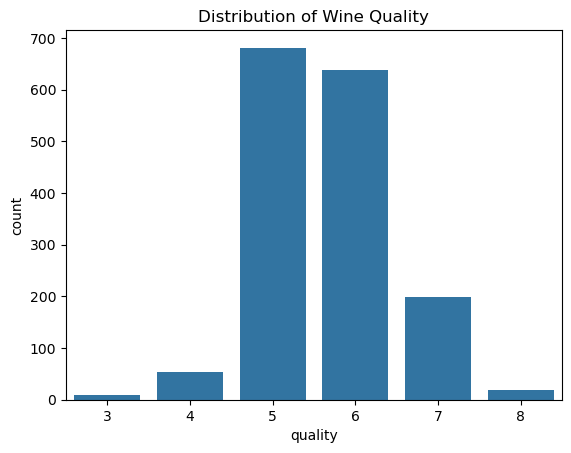
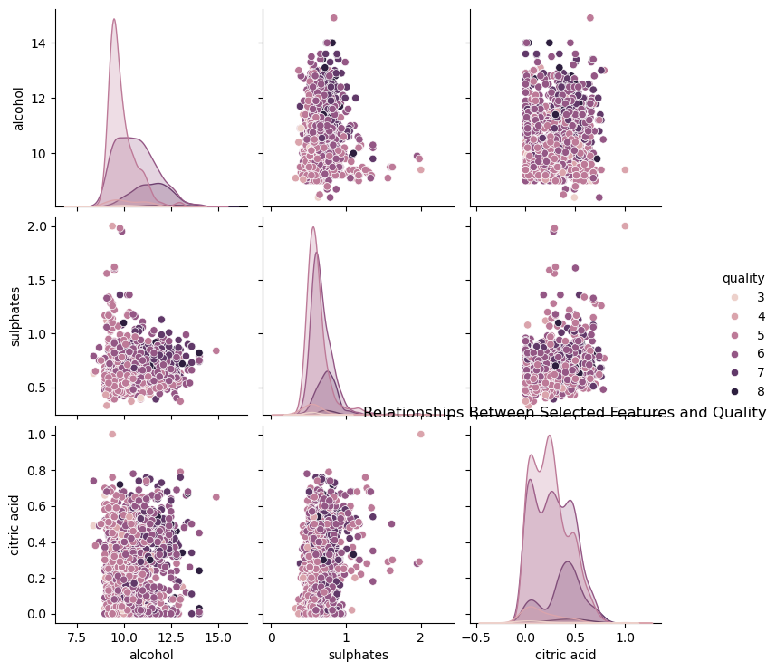
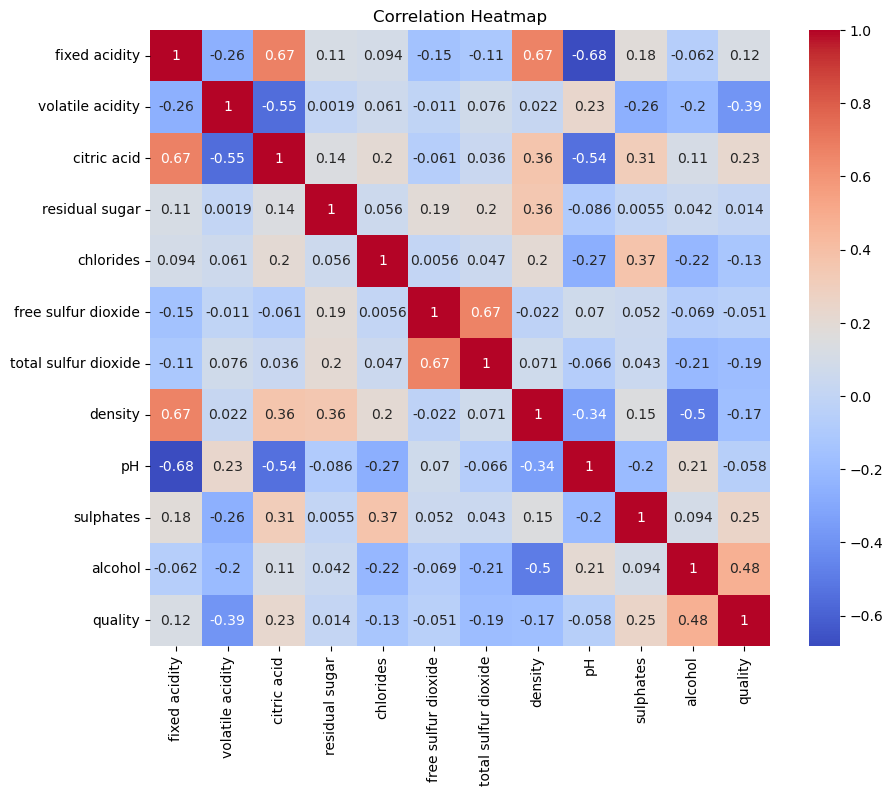

<!DOCTYPE html>


<html lang="en" data-content_root="./" >

  <head>
    <meta charset="utf-8" />
    <meta name="viewport" content="width=device-width, initial-scale=1.0" /><meta name="viewport" content="width=device-width, initial-scale=1" />

    <title>&lt;no title&gt; &#8212; Wine Quality Prediction Project</title>
  
  
  
  <script data-cfasync="false">
    document.documentElement.dataset.mode = localStorage.getItem("mode") || "";
    document.documentElement.dataset.theme = localStorage.getItem("theme") || "";
  </script>
  <!--
    this give us a css class that will be invisible only if js is disabled
  -->
  <noscript>
    <style>
      .pst-js-only { display: none !important; }

    </style>
  </noscript>
  
  <!-- Loaded before other Sphinx assets -->
  <link href="_static/styles/theme.css?digest=8878045cc6db502f8baf" rel="stylesheet" />
<link href="_static/styles/pydata-sphinx-theme.css?digest=8878045cc6db502f8baf" rel="stylesheet" />

    <link rel="stylesheet" type="text/css" href="_static/pygments.css?v=b76e3c8a" />
    <link rel="stylesheet" type="text/css" href="_static/styles/sphinx-book-theme.css?v=a3416100" />
    <link rel="stylesheet" type="text/css" href="_static/togglebutton.css?v=13237357" />
    <link rel="stylesheet" type="text/css" href="_static/copybutton.css?v=76b2166b" />
    <link rel="stylesheet" type="text/css" href="_static/mystnb.4510f1fc1dee50b3e5859aac5469c37c29e427902b24a333a5f9fcb2f0b3ac41.css" />
    <link rel="stylesheet" type="text/css" href="_static/sphinx-thebe.css?v=4fa983c6" />
    <link rel="stylesheet" type="text/css" href="_static/sphinx-design.min.css?v=95c83b7e" />
  
  <!-- So that users can add custom icons -->
  <script src="_static/scripts/fontawesome.js?digest=8878045cc6db502f8baf"></script>
  <!-- Pre-loaded scripts that we'll load fully later -->
  <link rel="preload" as="script" href="_static/scripts/bootstrap.js?digest=8878045cc6db502f8baf" />
<link rel="preload" as="script" href="_static/scripts/pydata-sphinx-theme.js?digest=8878045cc6db502f8baf" />

    <script src="_static/documentation_options.js?v=9eb32ce0"></script>
    <script src="_static/doctools.js?v=9a2dae69"></script>
    <script src="_static/sphinx_highlight.js?v=dc90522c"></script>
    <script src="_static/clipboard.min.js?v=a7894cd8"></script>
    <script src="_static/copybutton.js?v=f281be69"></script>
    <script src="_static/scripts/sphinx-book-theme.js?v=887ef09a"></script>
    <script>let toggleHintShow = 'Click to show';</script>
    <script>let toggleHintHide = 'Click to hide';</script>
    <script>let toggleOpenOnPrint = 'true';</script>
    <script src="_static/togglebutton.js?v=4a39c7ea"></script>
    <script>var togglebuttonSelector = '.toggle, .admonition.dropdown';</script>
    <script src="_static/design-tabs.js?v=f930bc37"></script>
    <script>const THEBE_JS_URL = "https://unpkg.com/thebe@0.8.2/lib/index.js"; const thebe_selector = ".thebe,.cell"; const thebe_selector_input = "pre"; const thebe_selector_output = ".output, .cell_output"</script>
    <script async="async" src="_static/sphinx-thebe.js?v=c100c467"></script>
    <script>var togglebuttonSelector = '.toggle, .admonition.dropdown';</script>
    <script>const THEBE_JS_URL = "https://unpkg.com/thebe@0.8.2/lib/index.js"; const thebe_selector = ".thebe,.cell"; const thebe_selector_input = "pre"; const thebe_selector_output = ".output, .cell_output"</script>
    <script>DOCUMENTATION_OPTIONS.pagename = 'dataexplo';</script>
    <link rel="index" title="Index" href="genindex.html" />
    <link rel="search" title="Search" href="search.html" />
  <meta name="viewport" content="width=device-width, initial-scale=1"/>
  <meta name="docsearch:language" content="en"/>
  <meta name="docsearch:version" content="" />
  </head>
  
  
  <body data-bs-spy="scroll" data-bs-target=".bd-toc-nav" data-offset="180" data-bs-root-margin="0px 0px -60%" data-default-mode="">

  
  
  <div id="pst-skip-link" class="skip-link d-print-none"><a href="#main-content">Skip to main content</a></div>
  
  <div id="pst-scroll-pixel-helper"></div>
  
  <button type="button" class="btn rounded-pill" id="pst-back-to-top">
    <i class="fa-solid fa-arrow-up"></i>Back to top</button>

  
  <dialog id="pst-search-dialog">
    
<form class="bd-search d-flex align-items-center"
      action="search.html"
      method="get">
  <i class="fa-solid fa-magnifying-glass"></i>
  <input type="search"
         class="form-control"
         name="q"
         placeholder="Search this book..."
         aria-label="Search this book..."
         autocomplete="off"
         autocorrect="off"
         autocapitalize="off"
         spellcheck="false"/>
  <span class="search-button__kbd-shortcut"><kbd class="kbd-shortcut__modifier">Ctrl</kbd>+<kbd>K</kbd></span>
</form>
  </dialog>

  <div class="pst-async-banner-revealer d-none">
  <aside id="bd-header-version-warning" class="d-none d-print-none" aria-label="Version warning"></aside>
</div>

  
    <header class="bd-header navbar navbar-expand-lg bd-navbar d-print-none">
    </header>
  

  <div class="bd-container">
    <div class="bd-container__inner bd-page-width">
      
      
      
        
      
      <dialog id="pst-primary-sidebar-modal"></dialog>
      <div id="pst-primary-sidebar" class="bd-sidebar-primary bd-sidebar">
        

  
  <div class="sidebar-header-items sidebar-primary__section">
    
    
    
    
  </div>
  
    <div class="sidebar-primary-items__start sidebar-primary__section">
        <div class="sidebar-primary-item">

  
    
  

<a class="navbar-brand logo" href="intro.html">
  
  
  
  
  
    
    
      
    
    
    
    
  
  
</a></div>
        <div class="sidebar-primary-item">

<button class="btn search-button-field search-button__button pst-js-only" title="Search" aria-label="Search" data-bs-placement="bottom" data-bs-toggle="tooltip">
 <i class="fa-solid fa-magnifying-glass"></i>
 <span class="search-button__default-text">Search</span>
 <span class="search-button__kbd-shortcut"><kbd class="kbd-shortcut__modifier">Ctrl</kbd>+<kbd class="kbd-shortcut__modifier">K</kbd></span>
</button></div>
        <div class="sidebar-primary-item"><nav class="bd-links bd-docs-nav" aria-label="Main">
    <div class="bd-toc-item navbar-nav active">
        
        <ul class="nav bd-sidenav bd-sidenav__home-link">
            <li class="toctree-l1">
                <a class="reference internal" href="intro.html">
                    Welcome to the Wine Quality Project
                </a>
            </li>
        </ul>
        <ul class="nav bd-sidenav">
<li class="toctree-l1"><a class="reference internal" href="resume.html">My Resume</a></li>
<li class="toctree-l1"><a class="reference internal" href="links.html">Links</a></li>
<li class="toctree-l1"><a class="reference internal" href="video.html">Video Analysis</a></li>
<li class="toctree-l1"><a class="reference internal" href="final-code.html">Final Code</a></li>

</ul>

    </div>
</nav></div>
    </div>
  
  
  <div class="sidebar-primary-items__end sidebar-primary__section">
      <div class="sidebar-primary-item">
<div id="ethical-ad-placement"
      class="flat"
      data-ea-publisher="readthedocs"
      data-ea-type="readthedocs-sidebar"
      data-ea-manual="true">
</div></div>
  </div>


      </div>
      
      <main id="main-content" class="bd-main" role="main">
        
        

<div class="sbt-scroll-pixel-helper"></div>

          <div class="bd-content">
            <div class="bd-article-container">
              
              <div class="bd-header-article d-print-none">
<div class="header-article-items header-article__inner">
  
    <div class="header-article-items__start">
      
        <div class="header-article-item"><button class="sidebar-toggle primary-toggle btn btn-sm" title="Toggle primary sidebar" data-bs-placement="bottom" data-bs-toggle="tooltip">
  <span class="fa-solid fa-bars"></span>
</button></div>
      
    </div>
  
  
    <div class="header-article-items__end">
      
        <div class="header-article-item">

<div class="article-header-buttons">


<div class="dropdown dropdown-source-buttons">
  <button class="btn dropdown-toggle" type="button" data-bs-toggle="dropdown" aria-expanded="false" aria-label="Source repositories">
    <i class="fab fa-github"></i>
  </button>
  <ul class="dropdown-menu">
      
      
      
      <li><a href="https://github.com/LohithVattikuti/wine_quality_project" target="_blank"
   class="btn btn-sm btn-source-repository-button dropdown-item"
   title="Source repository"
   data-bs-placement="left" data-bs-toggle="tooltip"
>
  

<span class="btn__icon-container">
  <i class="fab fa-github"></i>
  </span>
<span class="btn__text-container">Repository</span>
</a>
</li>
      
      
      
      
      <li><a href="https://github.com/LohithVattikuti/wine_quality_project/issues/new?title=Issue%20on%20page%20%2Fdataexplo.html&body=Your%20issue%20content%20here." target="_blank"
   class="btn btn-sm btn-source-issues-button dropdown-item"
   title="Open an issue"
   data-bs-placement="left" data-bs-toggle="tooltip"
>
  

<span class="btn__icon-container">
  <i class="fas fa-lightbulb"></i>
  </span>
<span class="btn__text-container">Open issue</span>
</a>
</li>
      
  </ul>
</div>


<div class="dropdown dropdown-download-buttons">
  <button class="btn dropdown-toggle" type="button" data-bs-toggle="dropdown" aria-expanded="false" aria-label="Download this page">
    <i class="fas fa-download"></i>
  </button>
  <ul class="dropdown-menu">
      
      
      
      <li><a href="_sources/dataexplo.md" target="_blank"
   class="btn btn-sm btn-download-source-button dropdown-item"
   title="Download source file"
   data-bs-placement="left" data-bs-toggle="tooltip"
>
  

<span class="btn__icon-container">
  <i class="fas fa-file"></i>
  </span>
<span class="btn__text-container">.md</span>
</a>
</li>
      
      
      
      
      <li>
<button onclick="window.print()"
  class="btn btn-sm btn-download-pdf-button dropdown-item"
  title="Print to PDF"
  data-bs-placement="left" data-bs-toggle="tooltip"
>
  

<span class="btn__icon-container">
  <i class="fas fa-file-pdf"></i>
  </span>
<span class="btn__text-container">.pdf</span>
</button>
</li>
      
  </ul>
</div>


<button onclick="toggleFullScreen()"
  class="btn btn-sm btn-fullscreen-button"
  title="Fullscreen mode"
  data-bs-placement="bottom" data-bs-toggle="tooltip"
>
  

<span class="btn__icon-container">
  <i class="fas fa-expand"></i>
  </span>

</button>


<button class="btn btn-sm nav-link pst-navbar-icon theme-switch-button pst-js-only" aria-label="Color mode" data-bs-title="Color mode"  data-bs-placement="bottom" data-bs-toggle="tooltip">
  <i class="theme-switch fa-solid fa-sun                fa-lg" data-mode="light" title="Light"></i>
  <i class="theme-switch fa-solid fa-moon               fa-lg" data-mode="dark"  title="Dark"></i>
  <i class="theme-switch fa-solid fa-circle-half-stroke fa-lg" data-mode="auto"  title="System Settings"></i>
</button>


<button class="btn btn-sm pst-navbar-icon search-button search-button__button pst-js-only" title="Search" aria-label="Search" data-bs-placement="bottom" data-bs-toggle="tooltip">
    <i class="fa-solid fa-magnifying-glass fa-lg"></i>
</button>
<button class="sidebar-toggle secondary-toggle btn btn-sm" title="Toggle secondary sidebar" data-bs-placement="bottom" data-bs-toggle="tooltip">
    <span class="fa-solid fa-list"></span>
</button>
</div></div>
      
    </div>
  
</div>
</div>
              
              

<div id="jb-print-docs-body" class="onlyprint">
    <h1><no title></h1>
    <!-- Table of contents -->
    <div id="print-main-content">
        <div id="jb-print-toc">
            
            <div>
                <h2> Contents </h2>
            </div>
            <nav aria-label="Page">
                <ul class="simple visible nav section-nav flex-column">
</ul>

            </nav>
        </div>
    </div>
</div>

              
                
<div id="searchbox"></div>
                <article class="bd-article">
                  
  <div class="highlight-python notranslate"><div class="highlight"><pre><span></span><span class="n">FINAL</span> <span class="n">CODE</span>
</pre></div>
</div>
<div class="highlight-python notranslate"><div class="highlight"><pre><span></span><span class="c1">### Step 1: Load and Explore Dataset</span>
<span class="n">We</span> <span class="n">load</span> <span class="n">the</span> <span class="n">Wine</span> <span class="n">Quality</span> <span class="n">dataset</span> <span class="ow">and</span> <span class="n">display</span> <span class="n">the</span> <span class="n">first</span> <span class="n">few</span> <span class="n">rows</span> <span class="n">to</span> <span class="n">understand</span> <span class="n">the</span> <span class="n">structure</span><span class="o">.</span>
</pre></div>
</div>
<div class="highlight-python notranslate"><div class="highlight"><pre><span></span><span class="kn">import</span> <span class="nn">requests</span>
<span class="kn">import</span> <span class="nn">os</span>

<span class="c1"># Create the data folder if it doesn&#39;t exist</span>
<span class="n">data_folder</span> <span class="o">=</span> <span class="s2">&quot;../data&quot;</span>
<span class="n">os</span><span class="o">.</span><span class="n">makedirs</span><span class="p">(</span><span class="n">data_folder</span><span class="p">,</span> <span class="n">exist_ok</span><span class="o">=</span><span class="kc">True</span><span class="p">)</span>

<span class="c1"># Dataset URL and output file path</span>
<span class="n">url</span> <span class="o">=</span> <span class="s2">&quot;https://archive.ics.uci.edu/ml/machine-learning-databases/wine-quality/winequality-red.csv&quot;</span>
<span class="n">output_file</span> <span class="o">=</span> <span class="n">os</span><span class="o">.</span><span class="n">path</span><span class="o">.</span><span class="n">join</span><span class="p">(</span><span class="n">data_folder</span><span class="p">,</span> <span class="s2">&quot;winequality-red.csv&quot;</span><span class="p">)</span>

<span class="c1"># Download and save the dataset</span>
<span class="n">response</span> <span class="o">=</span> <span class="n">requests</span><span class="o">.</span><span class="n">get</span><span class="p">(</span><span class="n">url</span><span class="p">)</span>
<span class="k">with</span> <span class="nb">open</span><span class="p">(</span><span class="n">output_file</span><span class="p">,</span> <span class="s1">&#39;wb&#39;</span><span class="p">)</span> <span class="k">as</span> <span class="n">file</span><span class="p">:</span>
    <span class="n">file</span><span class="o">.</span><span class="n">write</span><span class="p">(</span><span class="n">response</span><span class="o">.</span><span class="n">content</span><span class="p">)</span>

<span class="nb">print</span><span class="p">(</span><span class="sa">f</span><span class="s2">&quot;Dataset downloaded and saved at </span><span class="si">{</span><span class="n">output_file</span><span class="si">}</span><span class="s2">&quot;</span><span class="p">)</span>
</pre></div>
</div>
<div class="highlight-none notranslate"><div class="highlight"><pre><span></span>Dataset downloaded and saved at ../data/winequality-red.csv
</pre></div>
</div>
<div class="highlight-python notranslate"><div class="highlight"><pre><span></span><span class="err">!</span><span class="n">pip</span> <span class="n">install</span> <span class="n">pandas</span> <span class="n">seaborn</span> <span class="n">matplotlib</span> <span class="n">numpy</span>
</pre></div>
</div>
<div class="highlight-none notranslate"><div class="highlight"><pre><span></span>Requirement already satisfied: pandas in /opt/anaconda3/lib/python3.12/site-packages (2.2.2)
Requirement already satisfied: seaborn in /opt/anaconda3/lib/python3.12/site-packages (0.13.2)
Requirement already satisfied: matplotlib in /opt/anaconda3/lib/python3.12/site-packages (3.9.2)
Requirement already satisfied: numpy in /opt/anaconda3/lib/python3.12/site-packages (1.26.4)
Requirement already satisfied: python-dateutil&gt;=2.8.2 in /opt/anaconda3/lib/python3.12/site-packages (from pandas) (2.9.0.post0)
Requirement already satisfied: pytz&gt;=2020.1 in /opt/anaconda3/lib/python3.12/site-packages (from pandas) (2024.1)
Requirement already satisfied: tzdata&gt;=2022.7 in /opt/anaconda3/lib/python3.12/site-packages (from pandas) (2023.3)
Requirement already satisfied: contourpy&gt;=1.0.1 in /opt/anaconda3/lib/python3.12/site-packages (from matplotlib) (1.2.0)
Requirement already satisfied: cycler&gt;=0.10 in /opt/anaconda3/lib/python3.12/site-packages (from matplotlib) (0.11.0)
Requirement already satisfied: fonttools&gt;=4.22.0 in /opt/anaconda3/lib/python3.12/site-packages (from matplotlib) (4.51.0)
Requirement already satisfied: kiwisolver&gt;=1.3.1 in /opt/anaconda3/lib/python3.12/site-packages (from matplotlib) (1.4.4)
Requirement already satisfied: packaging&gt;=20.0 in /opt/anaconda3/lib/python3.12/site-packages (from matplotlib) (24.1)
Requirement already satisfied: pillow&gt;=8 in /opt/anaconda3/lib/python3.12/site-packages (from matplotlib) (10.4.0)
Requirement already satisfied: pyparsing&gt;=2.3.1 in /opt/anaconda3/lib/python3.12/site-packages (from matplotlib) (3.1.2)
Requirement already satisfied: six&gt;=1.5 in /opt/anaconda3/lib/python3.12/site-packages (from python-dateutil&gt;=2.8.2-&gt;pandas) (1.16.0)
</pre></div>
</div>
<div class="highlight-python notranslate"><div class="highlight"><pre><span></span><span class="kn">import</span> <span class="nn">pandas</span> <span class="k">as</span> <span class="nn">pd</span>  <span class="c1"># For data manipulation</span>
<span class="kn">import</span> <span class="nn">numpy</span> <span class="k">as</span> <span class="nn">np</span>  <span class="c1"># For numerical computations</span>
<span class="kn">import</span> <span class="nn">matplotlib.pyplot</span> <span class="k">as</span> <span class="nn">plt</span>  <span class="c1"># For plotting</span>
<span class="kn">import</span> <span class="nn">seaborn</span> <span class="k">as</span> <span class="nn">sns</span>  <span class="c1"># For advanced visualizations</span>
</pre></div>
</div>
<div class="highlight-python notranslate"><div class="highlight"><pre><span></span><span class="kn">import</span> <span class="nn">pandas</span> <span class="k">as</span> <span class="nn">pd</span>
<span class="nb">print</span><span class="p">(</span><span class="sa">f</span><span class="s2">&quot;Pandas version: </span><span class="si">{</span><span class="n">pd</span><span class="o">.</span><span class="n">__version__</span><span class="si">}</span><span class="s2">&quot;</span><span class="p">)</span>
</pre></div>
</div>
<div class="highlight-none notranslate"><div class="highlight"><pre><span></span>Pandas version: 2.2.2
</pre></div>
</div>
<div class="highlight-python notranslate"><div class="highlight"><pre><span></span><span class="n">data</span> <span class="o">=</span> <span class="n">pd</span><span class="o">.</span><span class="n">read_csv</span><span class="p">(</span><span class="s2">&quot;../data/winequality-red.csv&quot;</span><span class="p">,</span> <span class="n">sep</span><span class="o">=</span><span class="s2">&quot;;&quot;</span><span class="p">)</span>
<span class="n">data</span><span class="o">.</span><span class="n">head</span><span class="p">()</span>
</pre></div>
</div>
<div>
<style scoped>
    .dataframe tbody tr th:only-of-type {
        vertical-align: middle;
    }
<div class="highlight-none notranslate"><div class="highlight"><pre><span></span>.dataframe tbody tr th {
    vertical-align: top;
}

.dataframe thead th {
    text-align: right;
}
</pre></div>
</div>
</style>
<table border="1" class="dataframe">
  <thead>
    <tr style="text-align: right;">
      <th></th>
      <th>fixed acidity</th>
      <th>volatile acidity</th>
      <th>citric acid</th>
      <th>residual sugar</th>
      <th>chlorides</th>
      <th>free sulfur dioxide</th>
      <th>total sulfur dioxide</th>
      <th>density</th>
      <th>pH</th>
      <th>sulphates</th>
      <th>alcohol</th>
      <th>quality</th>
    </tr>
  </thead>
  <tbody>
    <tr>
      <th>0</th>
      <td>7.4</td>
      <td>0.70</td>
      <td>0.00</td>
      <td>1.9</td>
      <td>0.076</td>
      <td>11.0</td>
      <td>34.0</td>
      <td>0.9978</td>
      <td>3.51</td>
      <td>0.56</td>
      <td>9.4</td>
      <td>5</td>
    </tr>
    <tr>
      <th>1</th>
      <td>7.8</td>
      <td>0.88</td>
      <td>0.00</td>
      <td>2.6</td>
      <td>0.098</td>
      <td>25.0</td>
      <td>67.0</td>
      <td>0.9968</td>
      <td>3.20</td>
      <td>0.68</td>
      <td>9.8</td>
      <td>5</td>
    </tr>
    <tr>
      <th>2</th>
      <td>7.8</td>
      <td>0.76</td>
      <td>0.04</td>
      <td>2.3</td>
      <td>0.092</td>
      <td>15.0</td>
      <td>54.0</td>
      <td>0.9970</td>
      <td>3.26</td>
      <td>0.65</td>
      <td>9.8</td>
      <td>5</td>
    </tr>
    <tr>
      <th>3</th>
      <td>11.2</td>
      <td>0.28</td>
      <td>0.56</td>
      <td>1.9</td>
      <td>0.075</td>
      <td>17.0</td>
      <td>60.0</td>
      <td>0.9980</td>
      <td>3.16</td>
      <td>0.58</td>
      <td>9.8</td>
      <td>6</td>
    </tr>
    <tr>
      <th>4</th>
      <td>7.4</td>
      <td>0.70</td>
      <td>0.00</td>
      <td>1.9</td>
      <td>0.076</td>
      <td>11.0</td>
      <td>34.0</td>
      <td>0.9978</td>
      <td>3.51</td>
      <td>0.56</td>
      <td>9.4</td>
      <td>5</td>
    </tr>
  </tbody>
</table>
</div>
<div class="highlight-python notranslate"><div class="highlight"><pre><span></span><span class="c1">### Step 2: Exploratory Data Analysis (EDA)</span>
<span class="n">In</span> <span class="n">this</span> <span class="n">step</span><span class="p">,</span> <span class="n">we</span> <span class="n">analyze</span> <span class="n">the</span> <span class="n">dataset</span> <span class="n">to</span> <span class="n">identify</span> <span class="n">missing</span> <span class="n">values</span><span class="p">,</span> <span class="n">understand</span> <span class="n">the</span> <span class="n">distribution</span> <span class="n">of</span> <span class="n">features</span><span class="p">,</span> <span class="ow">and</span> <span class="n">explore</span> <span class="n">relationships</span> <span class="k">with</span> <span class="n">the</span> <span class="n">target</span> <span class="n">variable</span> <span class="err">`</span><span class="n">quality</span><span class="err">`</span><span class="o">.</span>
</pre></div>
</div>
<div class="highlight-python notranslate"><div class="highlight"><pre><span></span><span class="c1"># Check for missing values</span>
<span class="nb">print</span><span class="p">(</span><span class="s2">&quot;Missing Values:&quot;</span><span class="p">)</span>
<span class="nb">print</span><span class="p">(</span><span class="n">data</span><span class="o">.</span><span class="n">isnull</span><span class="p">()</span><span class="o">.</span><span class="n">sum</span><span class="p">())</span>

<span class="c1"># Summary statistics of numerical features</span>
<span class="nb">print</span><span class="p">(</span><span class="s2">&quot;</span><span class="se">\n</span><span class="s2">Summary Statistics:&quot;</span><span class="p">)</span>
<span class="nb">print</span><span class="p">(</span><span class="n">data</span><span class="o">.</span><span class="n">describe</span><span class="p">())</span>

<span class="c1"># Distribution of the target variable</span>
<span class="n">sns</span><span class="o">.</span><span class="n">countplot</span><span class="p">(</span><span class="n">x</span><span class="o">=</span><span class="s2">&quot;quality&quot;</span><span class="p">,</span> <span class="n">data</span><span class="o">=</span><span class="n">data</span><span class="p">)</span>
<span class="n">plt</span><span class="o">.</span><span class="n">title</span><span class="p">(</span><span class="s2">&quot;Distribution of Wine Quality&quot;</span><span class="p">)</span>
<span class="n">plt</span><span class="o">.</span><span class="n">show</span><span class="p">()</span>

<span class="c1"># Pairplot of selected features</span>
<span class="n">selected_features</span> <span class="o">=</span> <span class="p">[</span><span class="s2">&quot;quality&quot;</span><span class="p">,</span> <span class="s2">&quot;alcohol&quot;</span><span class="p">,</span> <span class="s2">&quot;sulphates&quot;</span><span class="p">,</span> <span class="s2">&quot;citric acid&quot;</span><span class="p">]</span>
<span class="n">sns</span><span class="o">.</span><span class="n">pairplot</span><span class="p">(</span><span class="n">data</span><span class="p">[</span><span class="n">selected_features</span><span class="p">],</span> <span class="n">hue</span><span class="o">=</span><span class="s2">&quot;quality&quot;</span><span class="p">,</span> <span class="n">diag_kind</span><span class="o">=</span><span class="s2">&quot;kde&quot;</span><span class="p">)</span>
<span class="n">plt</span><span class="o">.</span><span class="n">title</span><span class="p">(</span><span class="s2">&quot;Relationships Between Selected Features and Quality&quot;</span><span class="p">)</span>
<span class="n">plt</span><span class="o">.</span><span class="n">show</span><span class="p">()</span>

<span class="c1"># Correlation heatmap</span>
<span class="n">correlation_matrix</span> <span class="o">=</span> <span class="n">data</span><span class="o">.</span><span class="n">corr</span><span class="p">()</span>
<span class="n">plt</span><span class="o">.</span><span class="n">figure</span><span class="p">(</span><span class="n">figsize</span><span class="o">=</span><span class="p">(</span><span class="mi">10</span><span class="p">,</span> <span class="mi">8</span><span class="p">))</span>
<span class="n">sns</span><span class="o">.</span><span class="n">heatmap</span><span class="p">(</span><span class="n">correlation_matrix</span><span class="p">,</span> <span class="n">annot</span><span class="o">=</span><span class="kc">True</span><span class="p">,</span> <span class="n">cmap</span><span class="o">=</span><span class="s2">&quot;coolwarm&quot;</span><span class="p">)</span>
<span class="n">plt</span><span class="o">.</span><span class="n">title</span><span class="p">(</span><span class="s2">&quot;Correlation Heatmap&quot;</span><span class="p">)</span>
<span class="n">plt</span><span class="o">.</span><span class="n">show</span><span class="p">()</span>
</pre></div>
</div>
<div class="highlight-none notranslate"><div class="highlight"><pre><span></span>Missing Values:
fixed acidity           0
volatile acidity        0
citric acid             0
residual sugar          0
chlorides               0
free sulfur dioxide     0
total sulfur dioxide    0
density                 0
pH                      0
sulphates               0
alcohol                 0
quality                 0
dtype: int64

Summary Statistics:
       fixed acidity  volatile acidity  citric acid  residual sugar  \
count    1599.000000       1599.000000  1599.000000     1599.000000   
mean        8.319637          0.527821     0.270976        2.538806   
std         1.741096          0.179060     0.194801        1.409928   
min         4.600000          0.120000     0.000000        0.900000   
25%         7.100000          0.390000     0.090000        1.900000   
50%         7.900000          0.520000     0.260000        2.200000   
75%         9.200000          0.640000     0.420000        2.600000   
max        15.900000          1.580000     1.000000       15.500000   

         chlorides  free sulfur dioxide  total sulfur dioxide      density  \
count  1599.000000          1599.000000           1599.000000  1599.000000   
mean      0.087467            15.874922             46.467792     0.996747   
std       0.047065            10.460157             32.895324     0.001887   
min       0.012000             1.000000              6.000000     0.990070   
25%       0.070000             7.000000             22.000000     0.995600   
50%       0.079000            14.000000             38.000000     0.996750   
75%       0.090000            21.000000             62.000000     0.997835   
max       0.611000            72.000000            289.000000     1.003690   

                pH    sulphates      alcohol      quality  
count  1599.000000  1599.000000  1599.000000  1599.000000  
mean      3.311113     0.658149    10.422983     5.636023  
std       0.154386     0.169507     1.065668     0.807569  
min       2.740000     0.330000     8.400000     3.000000  
25%       3.210000     0.550000     9.500000     5.000000  
50%       3.310000     0.620000    10.200000     6.000000  
75%       3.400000     0.730000    11.100000     6.000000  
max       4.010000     2.000000    14.900000     8.000000  
</pre></div>
</div>
<p></p>
<p></p>
<p></p>
<div class="highlight-python notranslate"><div class="highlight"><pre><span></span><span class="c1">### Step 3: Simulated Database and SQL Operations</span>
<span class="n">In</span> <span class="n">this</span> <span class="n">step</span><span class="p">,</span> <span class="n">we</span> <span class="n">simulate</span> <span class="n">SQL</span> <span class="n">operations</span> <span class="n">by</span> <span class="n">splitting</span> <span class="n">the</span> <span class="n">dataset</span> <span class="n">into</span> <span class="n">separate</span> <span class="n">tables</span> <span class="ow">and</span> <span class="n">performing</span> <span class="n">joins</span><span class="o">.</span>
</pre></div>
</div>
<div class="highlight-python notranslate"><div class="highlight"><pre><span></span><span class="c1"># Save a portion of the dataset as separate CSVs (simulating separate database tables)</span>
<span class="n">data</span><span class="p">[[</span><span class="s1">&#39;fixed acidity&#39;</span><span class="p">,</span> <span class="s1">&#39;volatile acidity&#39;</span><span class="p">,</span> <span class="s1">&#39;citric acid&#39;</span><span class="p">,</span> <span class="s1">&#39;alcohol&#39;</span><span class="p">]]</span><span class="o">.</span><span class="n">to_csv</span><span class="p">(</span><span class="s2">&quot;../data/wine_features.csv&quot;</span><span class="p">,</span> <span class="n">index</span><span class="o">=</span><span class="kc">False</span><span class="p">)</span>
<span class="n">data</span><span class="p">[[</span><span class="s1">&#39;quality&#39;</span><span class="p">]]</span><span class="o">.</span><span class="n">to_csv</span><span class="p">(</span><span class="s2">&quot;../data/wine_labels.csv&quot;</span><span class="p">,</span> <span class="n">index</span><span class="o">=</span><span class="kc">False</span><span class="p">)</span>

<span class="c1"># Load and join the tables</span>
<span class="n">wine_features</span> <span class="o">=</span> <span class="n">pd</span><span class="o">.</span><span class="n">read_csv</span><span class="p">(</span><span class="s2">&quot;../data/wine_features.csv&quot;</span><span class="p">)</span>
<span class="n">wine_labels</span> <span class="o">=</span> <span class="n">pd</span><span class="o">.</span><span class="n">read_csv</span><span class="p">(</span><span class="s2">&quot;../data/wine_labels.csv&quot;</span><span class="p">)</span>

<span class="c1"># Simulate an SQL join</span>
<span class="n">wine_data_joined</span> <span class="o">=</span> <span class="n">pd</span><span class="o">.</span><span class="n">concat</span><span class="p">([</span><span class="n">wine_features</span><span class="p">,</span> <span class="n">wine_labels</span><span class="p">],</span> <span class="n">axis</span><span class="o">=</span><span class="mi">1</span><span class="p">)</span>

<span class="c1"># Display the joined data</span>
<span class="nb">print</span><span class="p">(</span><span class="n">wine_data_joined</span><span class="o">.</span><span class="n">head</span><span class="p">())</span>
</pre></div>
</div>
<div class="highlight-none notranslate"><div class="highlight"><pre><span></span>   fixed acidity  volatile acidity  citric acid  alcohol  quality
0            7.4              0.70         0.00      9.4        5
1            7.8              0.88         0.00      9.8        5
2            7.8              0.76         0.04      9.8        5
3           11.2              0.28         0.56      9.8        6
4            7.4              0.70         0.00      9.4        5
</pre></div>
</div>
<div class="highlight-python notranslate"><div class="highlight"><pre><span></span><span class="c1">### Step 4: Data Preprocessing Using Pipelines</span>
<span class="n">In</span> <span class="n">this</span> <span class="n">step</span><span class="p">,</span> <span class="n">we</span> <span class="n">preprocess</span> <span class="n">the</span> <span class="n">dataset</span> <span class="n">by</span> <span class="n">scaling</span> <span class="n">the</span> <span class="n">numerical</span> <span class="n">features</span> <span class="n">to</span> <span class="n">standardize</span> <span class="n">them</span><span class="o">.</span>
</pre></div>
</div>
<div class="highlight-python notranslate"><div class="highlight"><pre><span></span><span class="kn">from</span> <span class="nn">sklearn.compose</span> <span class="kn">import</span> <span class="n">ColumnTransformer</span>
<span class="kn">from</span> <span class="nn">sklearn.pipeline</span> <span class="kn">import</span> <span class="n">Pipeline</span>
<span class="kn">from</span> <span class="nn">sklearn.preprocessing</span> <span class="kn">import</span> <span class="n">StandardScaler</span>
<span class="kn">from</span> <span class="nn">sklearn.model_selection</span> <span class="kn">import</span> <span class="n">train_test_split</span>

<span class="c1"># Define features and target</span>
<span class="n">X</span> <span class="o">=</span> <span class="n">wine_data_joined</span><span class="o">.</span><span class="n">drop</span><span class="p">(</span><span class="s2">&quot;quality&quot;</span><span class="p">,</span> <span class="n">axis</span><span class="o">=</span><span class="mi">1</span><span class="p">)</span>
<span class="n">y</span> <span class="o">=</span> <span class="n">wine_data_joined</span><span class="p">[</span><span class="s2">&quot;quality&quot;</span><span class="p">]</span>

<span class="c1"># Define numerical features for scaling</span>
<span class="n">numerical_features</span> <span class="o">=</span> <span class="n">X</span><span class="o">.</span><span class="n">columns</span><span class="o">.</span><span class="n">tolist</span><span class="p">()</span>

<span class="c1"># Define preprocessing pipeline</span>
<span class="n">preprocessor</span> <span class="o">=</span> <span class="n">ColumnTransformer</span><span class="p">(</span>
    <span class="n">transformers</span><span class="o">=</span><span class="p">[</span>
        <span class="p">(</span><span class="s1">&#39;num&#39;</span><span class="p">,</span> <span class="n">StandardScaler</span><span class="p">(),</span> <span class="n">numerical_features</span><span class="p">)</span>
    <span class="p">]</span>
<span class="p">)</span>

<span class="c1"># Split the dataset into training and test sets</span>
<span class="n">X_train</span><span class="p">,</span> <span class="n">X_test</span><span class="p">,</span> <span class="n">y_train</span><span class="p">,</span> <span class="n">y_test</span> <span class="o">=</span> <span class="n">train_test_split</span><span class="p">(</span><span class="n">X</span><span class="p">,</span> <span class="n">y</span><span class="p">,</span> <span class="n">test_size</span><span class="o">=</span><span class="mf">0.2</span><span class="p">,</span> <span class="n">random_state</span><span class="o">=</span><span class="mi">42</span><span class="p">)</span>

<span class="c1"># Apply preprocessing</span>
<span class="n">X_train_scaled</span> <span class="o">=</span> <span class="n">preprocessor</span><span class="o">.</span><span class="n">fit_transform</span><span class="p">(</span><span class="n">X_train</span><span class="p">)</span>
<span class="n">X_test_scaled</span> <span class="o">=</span> <span class="n">preprocessor</span><span class="o">.</span><span class="n">transform</span><span class="p">(</span><span class="n">X_test</span><span class="p">)</span>

<span class="c1"># Display the first few rows of the scaled training data</span>
<span class="nb">print</span><span class="p">(</span><span class="s2">&quot;Scaled Training Data:&quot;</span><span class="p">)</span>
<span class="nb">print</span><span class="p">(</span><span class="n">X_train_scaled</span><span class="p">[:</span><span class="mi">5</span><span class="p">])</span>
</pre></div>
</div>
<div class="highlight-none notranslate"><div class="highlight"><pre><span></span>Scaled Training Data:
[[ 0.21833164  0.88971201  0.19209222  1.12317723]
 [-1.29016623 -1.78878251  0.65275338  1.40827174]
 [ 1.49475291 -0.78434707  1.01104539 -0.58738978]
 [ 0.27635078  0.86181102 -0.06383064 -0.96751578]
 [ 0.04427419  2.81487994 -0.62686095 -0.49235828]]
</pre></div>
</div>
<div class="highlight-python notranslate"><div class="highlight"><pre><span></span><span class="c1">### Step 5: Model Training and Evaluation</span>
<span class="n">In</span> <span class="n">this</span> <span class="n">step</span><span class="p">,</span> <span class="n">we</span> <span class="n">train</span> <span class="n">a</span> <span class="n">Random</span> <span class="n">Forest</span> <span class="n">classifier</span> <span class="n">to</span> <span class="n">predict</span> <span class="n">wine</span> <span class="n">quality</span> <span class="ow">and</span> <span class="n">evaluate</span> <span class="n">its</span> <span class="n">performance</span><span class="o">.</span>
</pre></div>
</div>
<div class="highlight-python notranslate"><div class="highlight"><pre><span></span><span class="kn">from</span> <span class="nn">sklearn.ensemble</span> <span class="kn">import</span> <span class="n">RandomForestClassifier</span>
<span class="kn">from</span> <span class="nn">sklearn.metrics</span> <span class="kn">import</span> <span class="n">classification_report</span>
<span class="kn">from</span> <span class="nn">sklearn.model_selection</span> <span class="kn">import</span> <span class="n">cross_val_score</span>

<span class="c1"># Initialize the Random Forest Classifier</span>
<span class="n">model</span> <span class="o">=</span> <span class="n">RandomForestClassifier</span><span class="p">(</span><span class="n">random_state</span><span class="o">=</span><span class="mi">42</span><span class="p">)</span>

<span class="c1"># Train the model on the scaled training data</span>
<span class="n">model</span><span class="o">.</span><span class="n">fit</span><span class="p">(</span><span class="n">X_train_scaled</span><span class="p">,</span> <span class="n">y_train</span><span class="p">)</span>

<span class="c1"># Perform cross-validation</span>
<span class="n">cv_scores</span> <span class="o">=</span> <span class="n">cross_val_score</span><span class="p">(</span><span class="n">model</span><span class="p">,</span> <span class="n">X_train_scaled</span><span class="p">,</span> <span class="n">y_train</span><span class="p">,</span> <span class="n">cv</span><span class="o">=</span><span class="mi">5</span><span class="p">,</span> <span class="n">scoring</span><span class="o">=</span><span class="s1">&#39;accuracy&#39;</span><span class="p">)</span>
<span class="nb">print</span><span class="p">(</span><span class="s2">&quot;Cross-Validation Accuracy Scores:&quot;</span><span class="p">,</span> <span class="n">cv_scores</span><span class="p">)</span>
<span class="nb">print</span><span class="p">(</span><span class="s2">&quot;Mean Cross-Validation Accuracy:&quot;</span><span class="p">,</span> <span class="n">cv_scores</span><span class="o">.</span><span class="n">mean</span><span class="p">())</span>

<span class="c1"># Test set predictions</span>
<span class="n">y_pred</span> <span class="o">=</span> <span class="n">model</span><span class="o">.</span><span class="n">predict</span><span class="p">(</span><span class="n">X_test_scaled</span><span class="p">)</span>

<span class="c1"># Classification report</span>
<span class="nb">print</span><span class="p">(</span><span class="s2">&quot;</span><span class="se">\n</span><span class="s2">Classification Report on Test Set:&quot;</span><span class="p">)</span>
<span class="nb">print</span><span class="p">(</span><span class="n">classification_report</span><span class="p">(</span><span class="n">y_test</span><span class="p">,</span> <span class="n">y_pred</span><span class="p">))</span>
</pre></div>
</div>
<div class="highlight-none notranslate"><div class="highlight"><pre><span></span>Cross-Validation Accuracy Scores: [0.62890625 0.67578125 0.6015625  0.640625   0.67058824]
Mean Cross-Validation Accuracy: 0.6434926470588235

Classification Report on Test Set:
              precision    recall  f1-score   support

           3       0.00      0.00      0.00         1
           4       0.50      0.10      0.17        10
           5       0.74      0.77      0.75       130
           6       0.66      0.67      0.66       132
           7       0.55      0.57      0.56        42
           8       0.00      0.00      0.00         5

    accuracy                           0.67       320
   macro avg       0.41      0.35      0.36       320
weighted avg       0.66      0.67      0.66       320
</pre></div>
</div>
<div class="highlight-python notranslate"><div class="highlight"><pre><span></span><span class="c1">### Step 6.1: Save the Trained Model</span>
<span class="n">We</span> <span class="n">save</span> <span class="n">the</span> <span class="n">trained</span> <span class="n">Random</span> <span class="n">Forest</span> <span class="n">model</span> <span class="n">to</span> <span class="n">the</span> <span class="n">outputs</span> <span class="n">folder</span> <span class="k">for</span> <span class="n">reuse</span><span class="o">.</span>
</pre></div>
</div>
<div class="highlight-python notranslate"><div class="highlight"><pre><span></span><span class="kn">import</span> <span class="nn">pandas</span> <span class="k">as</span> <span class="nn">pd</span>

<span class="c1"># Load the split datasets</span>
<span class="n">wine_features</span> <span class="o">=</span> <span class="n">pd</span><span class="o">.</span><span class="n">read_csv</span><span class="p">(</span><span class="s2">&quot;../data/wine_features.csv&quot;</span><span class="p">)</span>
<span class="n">wine_labels</span> <span class="o">=</span> <span class="n">pd</span><span class="o">.</span><span class="n">read_csv</span><span class="p">(</span><span class="s2">&quot;../data/wine_labels.csv&quot;</span><span class="p">)</span>

<span class="c1"># Simulate SQL join by combining the datasets</span>
<span class="n">wine_data_joined</span> <span class="o">=</span> <span class="n">pd</span><span class="o">.</span><span class="n">concat</span><span class="p">([</span><span class="n">wine_features</span><span class="p">,</span> <span class="n">wine_labels</span><span class="p">],</span> <span class="n">axis</span><span class="o">=</span><span class="mi">1</span><span class="p">)</span>

<span class="c1"># Display the first few rows to verify</span>
<span class="nb">print</span><span class="p">(</span><span class="n">wine_data_joined</span><span class="o">.</span><span class="n">head</span><span class="p">())</span>
</pre></div>
</div>
<div class="highlight-none notranslate"><div class="highlight"><pre><span></span>   fixed acidity  volatile acidity  citric acid  alcohol  quality
0            7.4              0.70         0.00      9.4        5
1            7.8              0.88         0.00      9.8        5
2            7.8              0.76         0.04      9.8        5
3           11.2              0.28         0.56      9.8        6
4            7.4              0.70         0.00      9.4        5
</pre></div>
</div>
<div class="highlight-python notranslate"><div class="highlight"><pre><span></span><span class="kn">from</span> <span class="nn">sklearn.ensemble</span> <span class="kn">import</span> <span class="n">RandomForestClassifier</span>
<span class="kn">from</span> <span class="nn">sklearn.model_selection</span> <span class="kn">import</span> <span class="n">train_test_split</span>
<span class="kn">from</span> <span class="nn">sklearn.compose</span> <span class="kn">import</span> <span class="n">ColumnTransformer</span>
<span class="kn">from</span> <span class="nn">sklearn.pipeline</span> <span class="kn">import</span> <span class="n">Pipeline</span>
<span class="kn">from</span> <span class="nn">sklearn.preprocessing</span> <span class="kn">import</span> <span class="n">StandardScaler</span>

<span class="c1"># Split the dataset into features (X) and target (y)</span>
<span class="n">X</span> <span class="o">=</span> <span class="n">wine_data_joined</span><span class="o">.</span><span class="n">drop</span><span class="p">(</span><span class="s2">&quot;quality&quot;</span><span class="p">,</span> <span class="n">axis</span><span class="o">=</span><span class="mi">1</span><span class="p">)</span>
<span class="n">y</span> <span class="o">=</span> <span class="n">wine_data_joined</span><span class="p">[</span><span class="s2">&quot;quality&quot;</span><span class="p">]</span>

<span class="c1"># Define the preprocessing pipeline</span>
<span class="n">preprocessor</span> <span class="o">=</span> <span class="n">ColumnTransformer</span><span class="p">(</span>
    <span class="n">transformers</span><span class="o">=</span><span class="p">[</span>
        <span class="p">(</span><span class="s1">&#39;num&#39;</span><span class="p">,</span> <span class="n">StandardScaler</span><span class="p">(),</span> <span class="n">X</span><span class="o">.</span><span class="n">columns</span><span class="p">)</span>
    <span class="p">]</span>
<span class="p">)</span>

<span class="c1"># Split the dataset into training and test sets</span>
<span class="n">X_train</span><span class="p">,</span> <span class="n">X_test</span><span class="p">,</span> <span class="n">y_train</span><span class="p">,</span> <span class="n">y_test</span> <span class="o">=</span> <span class="n">train_test_split</span><span class="p">(</span><span class="n">X</span><span class="p">,</span> <span class="n">y</span><span class="p">,</span> <span class="n">test_size</span><span class="o">=</span><span class="mf">0.2</span><span class="p">,</span> <span class="n">random_state</span><span class="o">=</span><span class="mi">42</span><span class="p">)</span>

<span class="c1"># Preprocess the data</span>
<span class="n">X_train_scaled</span> <span class="o">=</span> <span class="n">preprocessor</span><span class="o">.</span><span class="n">fit_transform</span><span class="p">(</span><span class="n">X_train</span><span class="p">)</span>
<span class="n">X_test_scaled</span> <span class="o">=</span> <span class="n">preprocessor</span><span class="o">.</span><span class="n">transform</span><span class="p">(</span><span class="n">X_test</span><span class="p">)</span>

<span class="c1"># Train the Random Forest model</span>
<span class="n">model</span> <span class="o">=</span> <span class="n">RandomForestClassifier</span><span class="p">(</span><span class="n">random_state</span><span class="o">=</span><span class="mi">42</span><span class="p">)</span>
<span class="n">model</span><span class="o">.</span><span class="n">fit</span><span class="p">(</span><span class="n">X_train_scaled</span><span class="p">,</span> <span class="n">y_train</span><span class="p">)</span>

<span class="nb">print</span><span class="p">(</span><span class="s2">&quot;Model training complete.&quot;</span><span class="p">)</span>
</pre></div>
</div>
<div class="highlight-none notranslate"><div class="highlight"><pre><span></span>Model training complete.
</pre></div>
</div>
<div class="highlight-python notranslate"><div class="highlight"><pre><span></span><span class="kn">import</span> <span class="nn">joblib</span>

<span class="c1"># Save the trained model</span>
<span class="n">model_path</span> <span class="o">=</span> <span class="s2">&quot;../outputs/wine_quality_model.joblib&quot;</span>
<span class="n">joblib</span><span class="o">.</span><span class="n">dump</span><span class="p">(</span><span class="n">model</span><span class="p">,</span> <span class="n">model_path</span><span class="p">)</span>
<span class="nb">print</span><span class="p">(</span><span class="sa">f</span><span class="s2">&quot;Model saved at </span><span class="si">{</span><span class="n">model_path</span><span class="si">}</span><span class="s2">&quot;</span><span class="p">)</span>
</pre></div>
</div>
<div class="highlight-none notranslate"><div class="highlight"><pre><span></span>Model saved at ../outputs/wine_quality_model.joblib
</pre></div>
</div>
<div class="highlight-python notranslate"><div class="highlight"><pre><span></span><span class="n">pip</span> <span class="n">install</span> <span class="n">mlflow</span> <span class="n">scikit</span><span class="o">-</span><span class="n">learn</span> <span class="n">numpy</span> <span class="n">pandas</span> <span class="n">matplotlib</span>
</pre></div>
</div>
<div class="highlight-none notranslate"><div class="highlight"><pre><span></span>Collecting mlflow
  Downloading mlflow-2.19.0-py3-none-any.whl.metadata (30 kB)
Requirement already satisfied: scikit-learn in /opt/anaconda3/lib/python3.12/site-packages (1.5.1)
Requirement already satisfied: numpy in /opt/anaconda3/lib/python3.12/site-packages (1.26.4)
Requirement already satisfied: pandas in /opt/anaconda3/lib/python3.12/site-packages (2.2.2)
Requirement already satisfied: matplotlib in /opt/anaconda3/lib/python3.12/site-packages (3.9.2)
Collecting mlflow-skinny==2.19.0 (from mlflow)
  Downloading mlflow_skinny-2.19.0-py3-none-any.whl.metadata (31 kB)
Requirement already satisfied: Flask&lt;4 in /opt/anaconda3/lib/python3.12/site-packages (from mlflow) (3.0.3)
Requirement already satisfied: Jinja2&lt;4,&gt;=2.11 in /opt/anaconda3/lib/python3.12/site-packages (from mlflow) (3.1.4)
Requirement already satisfied: alembic!=1.10.0,&lt;2 in /opt/anaconda3/lib/python3.12/site-packages (from mlflow) (1.13.3)
Collecting docker&lt;8,&gt;=4.0.0 (from mlflow)
  Downloading docker-7.1.0-py3-none-any.whl.metadata (3.8 kB)
Collecting graphene&lt;4 (from mlflow)
  Downloading graphene-3.4.3-py2.py3-none-any.whl.metadata (6.9 kB)
Collecting gunicorn&lt;24 (from mlflow)
  Downloading gunicorn-23.0.0-py3-none-any.whl.metadata (4.4 kB)
Requirement already satisfied: markdown&lt;4,&gt;=3.3 in /opt/anaconda3/lib/python3.12/site-packages (from mlflow) (3.4.1)
Requirement already satisfied: pyarrow&lt;19,&gt;=4.0.0 in /opt/anaconda3/lib/python3.12/site-packages (from mlflow) (16.1.0)
Requirement already satisfied: scipy&lt;2 in /opt/anaconda3/lib/python3.12/site-packages (from mlflow) (1.13.1)
Requirement already satisfied: sqlalchemy&lt;3,&gt;=1.4.0 in /opt/anaconda3/lib/python3.12/site-packages (from mlflow) (2.0.34)
Requirement already satisfied: cachetools&lt;6,&gt;=5.0.0 in /opt/anaconda3/lib/python3.12/site-packages (from mlflow-skinny==2.19.0-&gt;mlflow) (5.3.3)
Requirement already satisfied: click&lt;9,&gt;=7.0 in /opt/anaconda3/lib/python3.12/site-packages (from mlflow-skinny==2.19.0-&gt;mlflow) (8.1.7)
Requirement already satisfied: cloudpickle&lt;4 in /opt/anaconda3/lib/python3.12/site-packages (from mlflow-skinny==2.19.0-&gt;mlflow) (3.0.0)
Collecting databricks-sdk&lt;1,&gt;=0.20.0 (from mlflow-skinny==2.19.0-&gt;mlflow)
  Downloading databricks_sdk-0.40.0-py3-none-any.whl.metadata (38 kB)
Requirement already satisfied: gitpython&lt;4,&gt;=3.1.9 in /opt/anaconda3/lib/python3.12/site-packages (from mlflow-skinny==2.19.0-&gt;mlflow) (3.1.43)
Requirement already satisfied: importlib_metadata!=4.7.0,&lt;9,&gt;=3.7.0 in /opt/anaconda3/lib/python3.12/site-packages (from mlflow-skinny==2.19.0-&gt;mlflow) (7.0.1)
Collecting opentelemetry-api&lt;3,&gt;=1.9.0 (from mlflow-skinny==2.19.0-&gt;mlflow)
  Downloading opentelemetry_api-1.29.0-py3-none-any.whl.metadata (1.4 kB)
Collecting opentelemetry-sdk&lt;3,&gt;=1.9.0 (from mlflow-skinny==2.19.0-&gt;mlflow)
  Downloading opentelemetry_sdk-1.29.0-py3-none-any.whl.metadata (1.5 kB)
Requirement already satisfied: packaging&lt;25 in /opt/anaconda3/lib/python3.12/site-packages (from mlflow-skinny==2.19.0-&gt;mlflow) (24.1)
Requirement already satisfied: protobuf&lt;6,&gt;=3.12.0 in /opt/anaconda3/lib/python3.12/site-packages (from mlflow-skinny==2.19.0-&gt;mlflow) (4.25.3)
Requirement already satisfied: pyyaml&lt;7,&gt;=5.1 in /opt/anaconda3/lib/python3.12/site-packages (from mlflow-skinny==2.19.0-&gt;mlflow) (6.0.1)
Requirement already satisfied: requests&lt;3,&gt;=2.17.3 in /opt/anaconda3/lib/python3.12/site-packages (from mlflow-skinny==2.19.0-&gt;mlflow) (2.32.3)
Collecting sqlparse&lt;1,&gt;=0.4.0 (from mlflow-skinny==2.19.0-&gt;mlflow)
  Downloading sqlparse-0.5.3-py3-none-any.whl.metadata (3.9 kB)
Requirement already satisfied: joblib&gt;=1.2.0 in /opt/anaconda3/lib/python3.12/site-packages (from scikit-learn) (1.4.2)
Requirement already satisfied: threadpoolctl&gt;=3.1.0 in /opt/anaconda3/lib/python3.12/site-packages (from scikit-learn) (3.5.0)
Requirement already satisfied: python-dateutil&gt;=2.8.2 in /opt/anaconda3/lib/python3.12/site-packages (from pandas) (2.9.0.post0)
Requirement already satisfied: pytz&gt;=2020.1 in /opt/anaconda3/lib/python3.12/site-packages (from pandas) (2024.1)
Requirement already satisfied: tzdata&gt;=2022.7 in /opt/anaconda3/lib/python3.12/site-packages (from pandas) (2023.3)
Requirement already satisfied: contourpy&gt;=1.0.1 in /opt/anaconda3/lib/python3.12/site-packages (from matplotlib) (1.2.0)
Requirement already satisfied: cycler&gt;=0.10 in /opt/anaconda3/lib/python3.12/site-packages (from matplotlib) (0.11.0)
Requirement already satisfied: fonttools&gt;=4.22.0 in /opt/anaconda3/lib/python3.12/site-packages (from matplotlib) (4.51.0)
Requirement already satisfied: kiwisolver&gt;=1.3.1 in /opt/anaconda3/lib/python3.12/site-packages (from matplotlib) (1.4.4)
Requirement already satisfied: pillow&gt;=8 in /opt/anaconda3/lib/python3.12/site-packages (from matplotlib) (10.4.0)
Requirement already satisfied: pyparsing&gt;=2.3.1 in /opt/anaconda3/lib/python3.12/site-packages (from matplotlib) (3.1.2)
Requirement already satisfied: Mako in /opt/anaconda3/lib/python3.12/site-packages (from alembic!=1.10.0,&lt;2-&gt;mlflow) (1.2.3)
Requirement already satisfied: typing-extensions&gt;=4 in /opt/anaconda3/lib/python3.12/site-packages (from alembic!=1.10.0,&lt;2-&gt;mlflow) (4.11.0)
Requirement already satisfied: urllib3&gt;=1.26.0 in /opt/anaconda3/lib/python3.12/site-packages (from docker&lt;8,&gt;=4.0.0-&gt;mlflow) (2.2.3)
Requirement already satisfied: Werkzeug&gt;=3.0.0 in /opt/anaconda3/lib/python3.12/site-packages (from Flask&lt;4-&gt;mlflow) (3.0.3)
Requirement already satisfied: itsdangerous&gt;=2.1.2 in /opt/anaconda3/lib/python3.12/site-packages (from Flask&lt;4-&gt;mlflow) (2.2.0)
Requirement already satisfied: blinker&gt;=1.6.2 in /opt/anaconda3/lib/python3.12/site-packages (from Flask&lt;4-&gt;mlflow) (1.6.2)
Collecting graphql-core&lt;3.3,&gt;=3.1 (from graphene&lt;4-&gt;mlflow)
  Downloading graphql_core-3.2.5-py3-none-any.whl.metadata (10 kB)
Collecting graphql-relay&lt;3.3,&gt;=3.1 (from graphene&lt;4-&gt;mlflow)
  Downloading graphql_relay-3.2.0-py3-none-any.whl.metadata (12 kB)
Requirement already satisfied: MarkupSafe&gt;=2.0 in /opt/anaconda3/lib/python3.12/site-packages (from Jinja2&lt;4,&gt;=2.11-&gt;mlflow) (2.1.3)
Requirement already satisfied: six&gt;=1.5 in /opt/anaconda3/lib/python3.12/site-packages (from python-dateutil&gt;=2.8.2-&gt;pandas) (1.16.0)
Collecting google-auth~=2.0 (from databricks-sdk&lt;1,&gt;=0.20.0-&gt;mlflow-skinny==2.19.0-&gt;mlflow)
  Downloading google_auth-2.37.0-py2.py3-none-any.whl.metadata (4.8 kB)
Requirement already satisfied: gitdb&lt;5,&gt;=4.0.1 in /opt/anaconda3/lib/python3.12/site-packages (from gitpython&lt;4,&gt;=3.1.9-&gt;mlflow-skinny==2.19.0-&gt;mlflow) (4.0.7)
Requirement already satisfied: zipp&gt;=0.5 in /opt/anaconda3/lib/python3.12/site-packages (from importlib_metadata!=4.7.0,&lt;9,&gt;=3.7.0-&gt;mlflow-skinny==2.19.0-&gt;mlflow) (3.17.0)
Collecting deprecated&gt;=1.2.6 (from opentelemetry-api&lt;3,&gt;=1.9.0-&gt;mlflow-skinny==2.19.0-&gt;mlflow)
  Downloading Deprecated-1.2.15-py2.py3-none-any.whl.metadata (5.5 kB)
Collecting opentelemetry-semantic-conventions==0.50b0 (from opentelemetry-sdk&lt;3,&gt;=1.9.0-&gt;mlflow-skinny==2.19.0-&gt;mlflow)
  Downloading opentelemetry_semantic_conventions-0.50b0-py3-none-any.whl.metadata (2.3 kB)
Requirement already satisfied: charset-normalizer&lt;4,&gt;=2 in /opt/anaconda3/lib/python3.12/site-packages (from requests&lt;3,&gt;=2.17.3-&gt;mlflow-skinny==2.19.0-&gt;mlflow) (3.3.2)
Requirement already satisfied: idna&lt;4,&gt;=2.5 in /opt/anaconda3/lib/python3.12/site-packages (from requests&lt;3,&gt;=2.17.3-&gt;mlflow-skinny==2.19.0-&gt;mlflow) (3.7)
Requirement already satisfied: certifi&gt;=2017.4.17 in /opt/anaconda3/lib/python3.12/site-packages (from requests&lt;3,&gt;=2.17.3-&gt;mlflow-skinny==2.19.0-&gt;mlflow) (2024.12.14)
Requirement already satisfied: wrapt&lt;2,&gt;=1.10 in /opt/anaconda3/lib/python3.12/site-packages (from deprecated&gt;=1.2.6-&gt;opentelemetry-api&lt;3,&gt;=1.9.0-&gt;mlflow-skinny==2.19.0-&gt;mlflow) (1.14.1)
Requirement already satisfied: smmap&lt;5,&gt;=3.0.1 in /opt/anaconda3/lib/python3.12/site-packages (from gitdb&lt;5,&gt;=4.0.1-&gt;gitpython&lt;4,&gt;=3.1.9-&gt;mlflow-skinny==2.19.0-&gt;mlflow) (4.0.0)
Requirement already satisfied: pyasn1-modules&gt;=0.2.1 in /opt/anaconda3/lib/python3.12/site-packages (from google-auth~=2.0-&gt;databricks-sdk&lt;1,&gt;=0.20.0-&gt;mlflow-skinny==2.19.0-&gt;mlflow) (0.2.8)
Collecting rsa&lt;5,&gt;=3.1.4 (from google-auth~=2.0-&gt;databricks-sdk&lt;1,&gt;=0.20.0-&gt;mlflow-skinny==2.19.0-&gt;mlflow)
  Downloading rsa-4.9-py3-none-any.whl.metadata (4.2 kB)
Requirement already satisfied: pyasn1&lt;0.5.0,&gt;=0.4.6 in /opt/anaconda3/lib/python3.12/site-packages (from pyasn1-modules&gt;=0.2.1-&gt;google-auth~=2.0-&gt;databricks-sdk&lt;1,&gt;=0.20.0-&gt;mlflow-skinny==2.19.0-&gt;mlflow) (0.4.8)
Downloading mlflow-2.19.0-py3-none-any.whl (27.4 MB)
   ━━━━━━━━━━━━━━━━━━━━━━━━━━━━━━━━━━━━━━━━ 27.4/27.4 MB 32.7 MB/s eta 0:00:0000:0100:01
[?25hDownloading mlflow_skinny-2.19.0-py3-none-any.whl (5.9 MB)
   ━━━━━━━━━━━━━━━━━━━━━━━━━━━━━━━━━━━━━━━━ 5.9/5.9 MB 29.8 MB/s eta 0:00:00
[?25hDownloading docker-7.1.0-py3-none-any.whl (147 kB)
Downloading graphene-3.4.3-py2.py3-none-any.whl (114 kB)
Downloading gunicorn-23.0.0-py3-none-any.whl (85 kB)
Downloading databricks_sdk-0.40.0-py3-none-any.whl (629 kB)
   ━━━━━━━━━━━━━━━━━━━━━━━━━━━━━━━━━━━━━━━━ 629.7/629.7 kB 18.3 MB/s eta 0:00:00
[?25hDownloading graphql_core-3.2.5-py3-none-any.whl (203 kB)
Downloading graphql_relay-3.2.0-py3-none-any.whl (16 kB)
Downloading opentelemetry_api-1.29.0-py3-none-any.whl (64 kB)
Downloading opentelemetry_sdk-1.29.0-py3-none-any.whl (118 kB)
Downloading opentelemetry_semantic_conventions-0.50b0-py3-none-any.whl (166 kB)
Downloading sqlparse-0.5.3-py3-none-any.whl (44 kB)
Downloading Deprecated-1.2.15-py2.py3-none-any.whl (9.9 kB)
Downloading google_auth-2.37.0-py2.py3-none-any.whl (209 kB)
Downloading rsa-4.9-py3-none-any.whl (34 kB)
Installing collected packages: sqlparse, rsa, gunicorn, graphql-core, deprecated, opentelemetry-api, graphql-relay, google-auth, docker, opentelemetry-semantic-conventions, graphene, databricks-sdk, opentelemetry-sdk, mlflow-skinny, mlflow
Successfully installed databricks-sdk-0.40.0 deprecated-1.2.15 docker-7.1.0 google-auth-2.37.0 graphene-3.4.3 graphql-core-3.2.5 graphql-relay-3.2.0 gunicorn-23.0.0 mlflow-2.19.0 mlflow-skinny-2.19.0 opentelemetry-api-1.29.0 opentelemetry-sdk-1.29.0 opentelemetry-semantic-conventions-0.50b0 rsa-4.9 sqlparse-0.5.3
Note: you may need to restart the kernel to use updated packages.
</pre></div>
</div>
<div class="highlight-python notranslate"><div class="highlight"><pre><span></span><span class="n">pip</span> <span class="n">install</span> <span class="n">xgboost</span> <span class="n">scikit</span><span class="o">-</span><span class="n">learn</span> <span class="n">mlflow</span> <span class="n">pandas</span> <span class="n">numpy</span>
</pre></div>
</div>
<div class="highlight-none notranslate"><div class="highlight"><pre><span></span>Collecting xgboost
  Downloading xgboost-2.1.3-py3-none-macosx_12_0_arm64.whl.metadata (2.1 kB)
Requirement already satisfied: scikit-learn in /opt/anaconda3/lib/python3.12/site-packages (1.5.1)
Requirement already satisfied: mlflow in /opt/anaconda3/lib/python3.12/site-packages (2.19.0)
Requirement already satisfied: pandas in /opt/anaconda3/lib/python3.12/site-packages (2.2.2)
Requirement already satisfied: numpy in /opt/anaconda3/lib/python3.12/site-packages (1.26.4)
Requirement already satisfied: scipy in /opt/anaconda3/lib/python3.12/site-packages (from xgboost) (1.13.1)
Requirement already satisfied: joblib&gt;=1.2.0 in /opt/anaconda3/lib/python3.12/site-packages (from scikit-learn) (1.4.2)
Requirement already satisfied: threadpoolctl&gt;=3.1.0 in /opt/anaconda3/lib/python3.12/site-packages (from scikit-learn) (3.5.0)
Requirement already satisfied: mlflow-skinny==2.19.0 in /opt/anaconda3/lib/python3.12/site-packages (from mlflow) (2.19.0)
Requirement already satisfied: Flask&lt;4 in /opt/anaconda3/lib/python3.12/site-packages (from mlflow) (3.0.3)
Requirement already satisfied: Jinja2&lt;4,&gt;=2.11 in /opt/anaconda3/lib/python3.12/site-packages (from mlflow) (3.1.4)
Requirement already satisfied: alembic!=1.10.0,&lt;2 in /opt/anaconda3/lib/python3.12/site-packages (from mlflow) (1.13.3)
Requirement already satisfied: docker&lt;8,&gt;=4.0.0 in /opt/anaconda3/lib/python3.12/site-packages (from mlflow) (7.1.0)
Requirement already satisfied: graphene&lt;4 in /opt/anaconda3/lib/python3.12/site-packages (from mlflow) (3.4.3)
Requirement already satisfied: gunicorn&lt;24 in /opt/anaconda3/lib/python3.12/site-packages (from mlflow) (23.0.0)
Requirement already satisfied: markdown&lt;4,&gt;=3.3 in /opt/anaconda3/lib/python3.12/site-packages (from mlflow) (3.4.1)
Requirement already satisfied: matplotlib&lt;4 in /opt/anaconda3/lib/python3.12/site-packages (from mlflow) (3.9.2)
Requirement already satisfied: pyarrow&lt;19,&gt;=4.0.0 in /opt/anaconda3/lib/python3.12/site-packages (from mlflow) (16.1.0)
Requirement already satisfied: sqlalchemy&lt;3,&gt;=1.4.0 in /opt/anaconda3/lib/python3.12/site-packages (from mlflow) (2.0.34)
Requirement already satisfied: cachetools&lt;6,&gt;=5.0.0 in /opt/anaconda3/lib/python3.12/site-packages (from mlflow-skinny==2.19.0-&gt;mlflow) (5.3.3)
Requirement already satisfied: click&lt;9,&gt;=7.0 in /opt/anaconda3/lib/python3.12/site-packages (from mlflow-skinny==2.19.0-&gt;mlflow) (8.1.7)
Requirement already satisfied: cloudpickle&lt;4 in /opt/anaconda3/lib/python3.12/site-packages (from mlflow-skinny==2.19.0-&gt;mlflow) (3.0.0)
Requirement already satisfied: databricks-sdk&lt;1,&gt;=0.20.0 in /opt/anaconda3/lib/python3.12/site-packages (from mlflow-skinny==2.19.0-&gt;mlflow) (0.40.0)
Requirement already satisfied: gitpython&lt;4,&gt;=3.1.9 in /opt/anaconda3/lib/python3.12/site-packages (from mlflow-skinny==2.19.0-&gt;mlflow) (3.1.43)
Requirement already satisfied: importlib_metadata!=4.7.0,&lt;9,&gt;=3.7.0 in /opt/anaconda3/lib/python3.12/site-packages (from mlflow-skinny==2.19.0-&gt;mlflow) (7.0.1)
Requirement already satisfied: opentelemetry-api&lt;3,&gt;=1.9.0 in /opt/anaconda3/lib/python3.12/site-packages (from mlflow-skinny==2.19.0-&gt;mlflow) (1.29.0)
Requirement already satisfied: opentelemetry-sdk&lt;3,&gt;=1.9.0 in /opt/anaconda3/lib/python3.12/site-packages (from mlflow-skinny==2.19.0-&gt;mlflow) (1.29.0)
Requirement already satisfied: packaging&lt;25 in /opt/anaconda3/lib/python3.12/site-packages (from mlflow-skinny==2.19.0-&gt;mlflow) (24.1)
Requirement already satisfied: protobuf&lt;6,&gt;=3.12.0 in /opt/anaconda3/lib/python3.12/site-packages (from mlflow-skinny==2.19.0-&gt;mlflow) (4.25.3)
Requirement already satisfied: pyyaml&lt;7,&gt;=5.1 in /opt/anaconda3/lib/python3.12/site-packages (from mlflow-skinny==2.19.0-&gt;mlflow) (6.0.1)
Requirement already satisfied: requests&lt;3,&gt;=2.17.3 in /opt/anaconda3/lib/python3.12/site-packages (from mlflow-skinny==2.19.0-&gt;mlflow) (2.32.3)
Requirement already satisfied: sqlparse&lt;1,&gt;=0.4.0 in /opt/anaconda3/lib/python3.12/site-packages (from mlflow-skinny==2.19.0-&gt;mlflow) (0.5.3)
Requirement already satisfied: python-dateutil&gt;=2.8.2 in /opt/anaconda3/lib/python3.12/site-packages (from pandas) (2.9.0.post0)
Requirement already satisfied: pytz&gt;=2020.1 in /opt/anaconda3/lib/python3.12/site-packages (from pandas) (2024.1)
Requirement already satisfied: tzdata&gt;=2022.7 in /opt/anaconda3/lib/python3.12/site-packages (from pandas) (2023.3)
Requirement already satisfied: Mako in /opt/anaconda3/lib/python3.12/site-packages (from alembic!=1.10.0,&lt;2-&gt;mlflow) (1.2.3)
Requirement already satisfied: typing-extensions&gt;=4 in /opt/anaconda3/lib/python3.12/site-packages (from alembic!=1.10.0,&lt;2-&gt;mlflow) (4.11.0)
Requirement already satisfied: urllib3&gt;=1.26.0 in /opt/anaconda3/lib/python3.12/site-packages (from docker&lt;8,&gt;=4.0.0-&gt;mlflow) (2.2.3)
Requirement already satisfied: Werkzeug&gt;=3.0.0 in /opt/anaconda3/lib/python3.12/site-packages (from Flask&lt;4-&gt;mlflow) (3.0.3)
Requirement already satisfied: itsdangerous&gt;=2.1.2 in /opt/anaconda3/lib/python3.12/site-packages (from Flask&lt;4-&gt;mlflow) (2.2.0)
Requirement already satisfied: blinker&gt;=1.6.2 in /opt/anaconda3/lib/python3.12/site-packages (from Flask&lt;4-&gt;mlflow) (1.6.2)
Requirement already satisfied: graphql-core&lt;3.3,&gt;=3.1 in /opt/anaconda3/lib/python3.12/site-packages (from graphene&lt;4-&gt;mlflow) (3.2.5)
Requirement already satisfied: graphql-relay&lt;3.3,&gt;=3.1 in /opt/anaconda3/lib/python3.12/site-packages (from graphene&lt;4-&gt;mlflow) (3.2.0)
Requirement already satisfied: MarkupSafe&gt;=2.0 in /opt/anaconda3/lib/python3.12/site-packages (from Jinja2&lt;4,&gt;=2.11-&gt;mlflow) (2.1.3)
Requirement already satisfied: contourpy&gt;=1.0.1 in /opt/anaconda3/lib/python3.12/site-packages (from matplotlib&lt;4-&gt;mlflow) (1.2.0)
Requirement already satisfied: cycler&gt;=0.10 in /opt/anaconda3/lib/python3.12/site-packages (from matplotlib&lt;4-&gt;mlflow) (0.11.0)
Requirement already satisfied: fonttools&gt;=4.22.0 in /opt/anaconda3/lib/python3.12/site-packages (from matplotlib&lt;4-&gt;mlflow) (4.51.0)
Requirement already satisfied: kiwisolver&gt;=1.3.1 in /opt/anaconda3/lib/python3.12/site-packages (from matplotlib&lt;4-&gt;mlflow) (1.4.4)
Requirement already satisfied: pillow&gt;=8 in /opt/anaconda3/lib/python3.12/site-packages (from matplotlib&lt;4-&gt;mlflow) (10.4.0)
Requirement already satisfied: pyparsing&gt;=2.3.1 in /opt/anaconda3/lib/python3.12/site-packages (from matplotlib&lt;4-&gt;mlflow) (3.1.2)
Requirement already satisfied: six&gt;=1.5 in /opt/anaconda3/lib/python3.12/site-packages (from python-dateutil&gt;=2.8.2-&gt;pandas) (1.16.0)
Requirement already satisfied: google-auth~=2.0 in /opt/anaconda3/lib/python3.12/site-packages (from databricks-sdk&lt;1,&gt;=0.20.0-&gt;mlflow-skinny==2.19.0-&gt;mlflow) (2.37.0)
Requirement already satisfied: gitdb&lt;5,&gt;=4.0.1 in /opt/anaconda3/lib/python3.12/site-packages (from gitpython&lt;4,&gt;=3.1.9-&gt;mlflow-skinny==2.19.0-&gt;mlflow) (4.0.7)
Requirement already satisfied: zipp&gt;=0.5 in /opt/anaconda3/lib/python3.12/site-packages (from importlib_metadata!=4.7.0,&lt;9,&gt;=3.7.0-&gt;mlflow-skinny==2.19.0-&gt;mlflow) (3.17.0)
Requirement already satisfied: deprecated&gt;=1.2.6 in /opt/anaconda3/lib/python3.12/site-packages (from opentelemetry-api&lt;3,&gt;=1.9.0-&gt;mlflow-skinny==2.19.0-&gt;mlflow) (1.2.15)
Requirement already satisfied: opentelemetry-semantic-conventions==0.50b0 in /opt/anaconda3/lib/python3.12/site-packages (from opentelemetry-sdk&lt;3,&gt;=1.9.0-&gt;mlflow-skinny==2.19.0-&gt;mlflow) (0.50b0)
Requirement already satisfied: charset-normalizer&lt;4,&gt;=2 in /opt/anaconda3/lib/python3.12/site-packages (from requests&lt;3,&gt;=2.17.3-&gt;mlflow-skinny==2.19.0-&gt;mlflow) (3.3.2)
Requirement already satisfied: idna&lt;4,&gt;=2.5 in /opt/anaconda3/lib/python3.12/site-packages (from requests&lt;3,&gt;=2.17.3-&gt;mlflow-skinny==2.19.0-&gt;mlflow) (3.7)
Requirement already satisfied: certifi&gt;=2017.4.17 in /opt/anaconda3/lib/python3.12/site-packages (from requests&lt;3,&gt;=2.17.3-&gt;mlflow-skinny==2.19.0-&gt;mlflow) (2024.12.14)
Requirement already satisfied: wrapt&lt;2,&gt;=1.10 in /opt/anaconda3/lib/python3.12/site-packages (from deprecated&gt;=1.2.6-&gt;opentelemetry-api&lt;3,&gt;=1.9.0-&gt;mlflow-skinny==2.19.0-&gt;mlflow) (1.14.1)
Requirement already satisfied: smmap&lt;5,&gt;=3.0.1 in /opt/anaconda3/lib/python3.12/site-packages (from gitdb&lt;5,&gt;=4.0.1-&gt;gitpython&lt;4,&gt;=3.1.9-&gt;mlflow-skinny==2.19.0-&gt;mlflow) (4.0.0)
Requirement already satisfied: pyasn1-modules&gt;=0.2.1 in /opt/anaconda3/lib/python3.12/site-packages (from google-auth~=2.0-&gt;databricks-sdk&lt;1,&gt;=0.20.0-&gt;mlflow-skinny==2.19.0-&gt;mlflow) (0.2.8)
Requirement already satisfied: rsa&lt;5,&gt;=3.1.4 in /opt/anaconda3/lib/python3.12/site-packages (from google-auth~=2.0-&gt;databricks-sdk&lt;1,&gt;=0.20.0-&gt;mlflow-skinny==2.19.0-&gt;mlflow) (4.9)
Requirement already satisfied: pyasn1&lt;0.5.0,&gt;=0.4.6 in /opt/anaconda3/lib/python3.12/site-packages (from pyasn1-modules&gt;=0.2.1-&gt;google-auth~=2.0-&gt;databricks-sdk&lt;1,&gt;=0.20.0-&gt;mlflow-skinny==2.19.0-&gt;mlflow) (0.4.8)
Downloading xgboost-2.1.3-py3-none-macosx_12_0_arm64.whl (1.9 MB)
   ━━━━━━━━━━━━━━━━━━━━━━━━━━━━━━━━━━━━━━━━ 1.9/1.9 MB 17.8 MB/s eta 0:00:00
[?25hInstalling collected packages: xgboost
Successfully installed xgboost-2.1.3
Note: you may need to restart the kernel to use updated packages.
</pre></div>
</div>
<div class="highlight-python notranslate"><div class="highlight"><pre><span></span><span class="kn">import</span> <span class="nn">pandas</span> <span class="k">as</span> <span class="nn">pd</span>

<span class="c1"># Load the dataset using the correct absolute path</span>
<span class="n">dataset_path</span> <span class="o">=</span> <span class="s2">&quot;/Users/lohithvattikuti/Desktop/Wine_Quality_project/data/wine_features.csv&quot;</span>
<span class="n">data</span> <span class="o">=</span> <span class="n">pd</span><span class="o">.</span><span class="n">read_csv</span><span class="p">(</span><span class="n">dataset_path</span><span class="p">)</span>

<span class="c1"># Print columns for verification</span>
<span class="nb">print</span><span class="p">(</span><span class="s2">&quot;Columns in dataset:&quot;</span><span class="p">,</span> <span class="n">data</span><span class="o">.</span><span class="n">columns</span><span class="p">)</span>
</pre></div>
</div>
<div class="highlight-none notranslate"><div class="highlight"><pre><span></span>Columns in dataset: Index([&#39;fixed acidity&#39;, &#39;volatile acidity&#39;, &#39;citric acid&#39;, &#39;residual sugar&#39;,
       &#39;chlorides&#39;, &#39;free sulfur dioxide&#39;, &#39;total sulfur dioxide&#39;, &#39;density&#39;,
       &#39;pH&#39;, &#39;sulphates&#39;, &#39;alcohol&#39;],
      dtype=&#39;object&#39;)
</pre></div>
</div>
<div class="highlight-python notranslate"><div class="highlight"><pre><span></span><span class="kn">import</span> <span class="nn">pandas</span> <span class="k">as</span> <span class="nn">pd</span>

<span class="c1"># Paths to the datasets</span>
<span class="n">features_path</span> <span class="o">=</span> <span class="s2">&quot;/Users/lohithvattikuti/Desktop/Wine_Quality_project/data/wine_features.csv&quot;</span>
<span class="n">labels_path</span> <span class="o">=</span> <span class="s2">&quot;/Users/lohithvattikuti/Desktop/Wine_Quality_project/data/wine_labels.csv&quot;</span>

<span class="c1"># Load features and labels</span>
<span class="n">features</span> <span class="o">=</span> <span class="n">pd</span><span class="o">.</span><span class="n">read_csv</span><span class="p">(</span><span class="n">features_path</span><span class="p">)</span>
<span class="n">labels</span> <span class="o">=</span> <span class="n">pd</span><span class="o">.</span><span class="n">read_csv</span><span class="p">(</span><span class="n">labels_path</span><span class="p">)</span>

<span class="c1"># Check the structure of the labels file</span>
<span class="nb">print</span><span class="p">(</span><span class="s2">&quot;Labels columns:&quot;</span><span class="p">,</span> <span class="n">labels</span><span class="o">.</span><span class="n">columns</span><span class="p">)</span>

<span class="c1"># Ensure there is a column to merge on (e.g., &#39;id&#39;)</span>
<span class="k">if</span> <span class="s1">&#39;id&#39;</span> <span class="ow">in</span> <span class="n">features</span><span class="o">.</span><span class="n">columns</span> <span class="ow">and</span> <span class="s1">&#39;id&#39;</span> <span class="ow">in</span> <span class="n">labels</span><span class="o">.</span><span class="n">columns</span><span class="p">:</span>
    <span class="n">data</span> <span class="o">=</span> <span class="n">features</span><span class="o">.</span><span class="n">merge</span><span class="p">(</span><span class="n">labels</span><span class="p">,</span> <span class="n">on</span><span class="o">=</span><span class="s1">&#39;id&#39;</span><span class="p">)</span>
<span class="k">else</span><span class="p">:</span>
    <span class="c1"># If there&#39;s no &#39;id&#39; column, concatenate the files assuming correct alignment</span>
    <span class="n">data</span> <span class="o">=</span> <span class="n">pd</span><span class="o">.</span><span class="n">concat</span><span class="p">([</span><span class="n">features</span><span class="p">,</span> <span class="n">labels</span><span class="p">],</span> <span class="n">axis</span><span class="o">=</span><span class="mi">1</span><span class="p">)</span>

<span class="c1"># Verify the final dataset</span>
<span class="nb">print</span><span class="p">(</span><span class="s2">&quot;Final dataset columns:&quot;</span><span class="p">,</span> <span class="n">data</span><span class="o">.</span><span class="n">columns</span><span class="p">)</span>
</pre></div>
</div>
<div class="highlight-none notranslate"><div class="highlight"><pre><span></span>Labels columns: Index([&#39;quality&#39;], dtype=&#39;object&#39;)
Final dataset columns: Index([&#39;fixed acidity&#39;, &#39;volatile acidity&#39;, &#39;citric acid&#39;, &#39;residual sugar&#39;,
       &#39;chlorides&#39;, &#39;free sulfur dioxide&#39;, &#39;total sulfur dioxide&#39;, &#39;density&#39;,
       &#39;pH&#39;, &#39;sulphates&#39;, &#39;alcohol&#39;, &#39;quality&#39;],
      dtype=&#39;object&#39;)
</pre></div>
</div>
<div class="highlight-python notranslate"><div class="highlight"><pre><span></span><span class="k">if</span> <span class="s1">&#39;quality&#39;</span> <span class="ow">not</span> <span class="ow">in</span> <span class="n">data</span><span class="o">.</span><span class="n">columns</span><span class="p">:</span>
    <span class="k">raise</span> <span class="ne">ValueError</span><span class="p">(</span><span class="s2">&quot;The target column &#39;quality&#39; is missing in the dataset.&quot;</span><span class="p">)</span>
</pre></div>
</div>
<div class="highlight-python notranslate"><div class="highlight"><pre><span></span><span class="kn">import</span> <span class="nn">pandas</span> <span class="k">as</span> <span class="nn">pd</span>
<span class="kn">import</span> <span class="nn">mlflow</span>

<span class="c1"># Paths to the datasets</span>
<span class="n">features_path</span> <span class="o">=</span> <span class="s2">&quot;/Users/lohithvattikuti/Desktop/Wine_Quality_project/data/wine_features.csv&quot;</span>
<span class="n">labels_path</span> <span class="o">=</span> <span class="s2">&quot;/Users/lohithvattikuti/Desktop/Wine_Quality_project/data/wine_labels.csv&quot;</span>

<span class="c1"># Load features and labels</span>
<span class="n">features</span> <span class="o">=</span> <span class="n">pd</span><span class="o">.</span><span class="n">read_csv</span><span class="p">(</span><span class="n">features_path</span><span class="p">)</span>
<span class="n">labels</span> <span class="o">=</span> <span class="n">pd</span><span class="o">.</span><span class="n">read_csv</span><span class="p">(</span><span class="n">labels_path</span><span class="p">)</span>

<span class="c1"># Check for an ID column for merging</span>
<span class="k">if</span> <span class="s2">&quot;id&quot;</span> <span class="ow">in</span> <span class="n">features</span><span class="o">.</span><span class="n">columns</span> <span class="ow">and</span> <span class="s2">&quot;id&quot;</span> <span class="ow">in</span> <span class="n">labels</span><span class="o">.</span><span class="n">columns</span><span class="p">:</span>
    <span class="n">data</span> <span class="o">=</span> <span class="n">features</span><span class="o">.</span><span class="n">merge</span><span class="p">(</span><span class="n">labels</span><span class="p">,</span> <span class="n">on</span><span class="o">=</span><span class="s2">&quot;id&quot;</span><span class="p">)</span>
<span class="k">else</span><span class="p">:</span>
    <span class="c1"># Concatenate datasets assuming alignment</span>
    <span class="n">data</span> <span class="o">=</span> <span class="n">pd</span><span class="o">.</span><span class="n">concat</span><span class="p">([</span><span class="n">features</span><span class="p">,</span> <span class="n">labels</span><span class="p">],</span> <span class="n">axis</span><span class="o">=</span><span class="mi">1</span><span class="p">)</span>

<span class="nb">print</span><span class="p">(</span><span class="s2">&quot;Final dataset columns:&quot;</span><span class="p">,</span> <span class="n">data</span><span class="o">.</span><span class="n">columns</span><span class="p">)</span>

<span class="c1"># Ensure the target column exists</span>
<span class="k">if</span> <span class="s2">&quot;quality&quot;</span> <span class="ow">not</span> <span class="ow">in</span> <span class="n">data</span><span class="o">.</span><span class="n">columns</span><span class="p">:</span>
    <span class="k">raise</span> <span class="ne">ValueError</span><span class="p">(</span><span class="sa">f</span><span class="s2">&quot;The target column &#39;quality&#39; is missing in the dataset. Columns found: </span><span class="si">{</span><span class="n">data</span><span class="o">.</span><span class="n">columns</span><span class="si">}</span><span class="s2">&quot;</span><span class="p">)</span>
</pre></div>
</div>
<div class="highlight-none notranslate"><div class="highlight"><pre><span></span>Final dataset columns: Index([&#39;fixed acidity&#39;, &#39;volatile acidity&#39;, &#39;citric acid&#39;, &#39;residual sugar&#39;,
       &#39;chlorides&#39;, &#39;free sulfur dioxide&#39;, &#39;total sulfur dioxide&#39;, &#39;density&#39;,
       &#39;pH&#39;, &#39;sulphates&#39;, &#39;alcohol&#39;, &#39;quality&#39;],
      dtype=&#39;object&#39;)
</pre></div>
</div>
<div class="highlight-python notranslate"><div class="highlight"><pre><span></span><span class="kn">import</span> <span class="nn">pandas</span> <span class="k">as</span> <span class="nn">pd</span>

<span class="c1"># Paths to the datasets</span>
<span class="n">features_path</span> <span class="o">=</span> <span class="s2">&quot;/Users/lohithvattikuti/Desktop/Wine_Quality_project/data/wine_features.csv&quot;</span>
<span class="n">labels_path</span> <span class="o">=</span> <span class="s2">&quot;/Users/lohithvattikuti/Desktop/Wine_Quality_project/data/wine_labels.csv&quot;</span>

<span class="c1"># Load features and labels</span>
<span class="n">features</span> <span class="o">=</span> <span class="n">pd</span><span class="o">.</span><span class="n">read_csv</span><span class="p">(</span><span class="n">features_path</span><span class="p">)</span>
<span class="n">labels</span> <span class="o">=</span> <span class="n">pd</span><span class="o">.</span><span class="n">read_csv</span><span class="p">(</span><span class="n">labels_path</span><span class="p">)</span>

<span class="c1"># Check if a common column exists for merging (e.g., &#39;id&#39;)</span>
<span class="k">if</span> <span class="s2">&quot;id&quot;</span> <span class="ow">in</span> <span class="n">features</span><span class="o">.</span><span class="n">columns</span> <span class="ow">and</span> <span class="s2">&quot;id&quot;</span> <span class="ow">in</span> <span class="n">labels</span><span class="o">.</span><span class="n">columns</span><span class="p">:</span>
    <span class="n">data</span> <span class="o">=</span> <span class="n">features</span><span class="o">.</span><span class="n">merge</span><span class="p">(</span><span class="n">labels</span><span class="p">,</span> <span class="n">on</span><span class="o">=</span><span class="s2">&quot;id&quot;</span><span class="p">)</span>
<span class="k">else</span><span class="p">:</span>
    <span class="c1"># If no common column, assume rows are aligned and concatenate</span>
    <span class="n">data</span> <span class="o">=</span> <span class="n">pd</span><span class="o">.</span><span class="n">concat</span><span class="p">([</span><span class="n">features</span><span class="p">,</span> <span class="n">labels</span><span class="p">],</span> <span class="n">axis</span><span class="o">=</span><span class="mi">1</span><span class="p">)</span>

<span class="c1"># Verify the dataset</span>
<span class="nb">print</span><span class="p">(</span><span class="s2">&quot;Final dataset columns:&quot;</span><span class="p">,</span> <span class="n">data</span><span class="o">.</span><span class="n">columns</span><span class="p">)</span>

<span class="c1"># Ensure the target column is present</span>
<span class="k">if</span> <span class="s2">&quot;quality&quot;</span> <span class="ow">not</span> <span class="ow">in</span> <span class="n">data</span><span class="o">.</span><span class="n">columns</span><span class="p">:</span>
    <span class="k">raise</span> <span class="ne">ValueError</span><span class="p">(</span><span class="s2">&quot;The target column &#39;quality&#39; is missing in the dataset.&quot;</span><span class="p">)</span>

<span class="c1"># Define features and target</span>
<span class="n">X</span> <span class="o">=</span> <span class="n">data</span><span class="o">.</span><span class="n">drop</span><span class="p">(</span><span class="s2">&quot;quality&quot;</span><span class="p">,</span> <span class="n">axis</span><span class="o">=</span><span class="mi">1</span><span class="p">)</span>
<span class="n">y</span> <span class="o">=</span> <span class="n">data</span><span class="p">[</span><span class="s2">&quot;quality&quot;</span><span class="p">]</span>
</pre></div>
</div>
<div class="highlight-none notranslate"><div class="highlight"><pre><span></span>Final dataset columns: Index([&#39;fixed acidity&#39;, &#39;volatile acidity&#39;, &#39;citric acid&#39;, &#39;residual sugar&#39;,
       &#39;chlorides&#39;, &#39;free sulfur dioxide&#39;, &#39;total sulfur dioxide&#39;, &#39;density&#39;,
       &#39;pH&#39;, &#39;sulphates&#39;, &#39;alcohol&#39;, &#39;quality&#39;],
      dtype=&#39;object&#39;)
</pre></div>
</div>
<div class="highlight-python notranslate"><div class="highlight"><pre><span></span><span class="kn">import</span> <span class="nn">pandas</span> <span class="k">as</span> <span class="nn">pd</span>

<span class="c1"># Paths to your datasets</span>
<span class="n">features_path</span> <span class="o">=</span> <span class="s2">&quot;/Users/lohithvattikuti/Desktop/Wine_Quality_project/data/wine_features.csv&quot;</span>
<span class="n">labels_path</span> <span class="o">=</span> <span class="s2">&quot;/Users/lohithvattikuti/Desktop/Wine_Quality_project/data/wine_labels.csv&quot;</span>

<span class="c1"># Load datasets</span>
<span class="n">features</span> <span class="o">=</span> <span class="n">pd</span><span class="o">.</span><span class="n">read_csv</span><span class="p">(</span><span class="n">features_path</span><span class="p">)</span>
<span class="n">labels</span> <span class="o">=</span> <span class="n">pd</span><span class="o">.</span><span class="n">read_csv</span><span class="p">(</span><span class="n">labels_path</span><span class="p">)</span>

<span class="c1"># Check the structure of the files</span>
<span class="nb">print</span><span class="p">(</span><span class="s2">&quot;Features columns:&quot;</span><span class="p">,</span> <span class="n">features</span><span class="o">.</span><span class="n">columns</span><span class="p">)</span>
<span class="nb">print</span><span class="p">(</span><span class="s2">&quot;Labels columns:&quot;</span><span class="p">,</span> <span class="n">labels</span><span class="o">.</span><span class="n">columns</span><span class="p">)</span>

<span class="c1"># Merge or concatenate datasets to include the &#39;quality&#39; column</span>
<span class="k">if</span> <span class="s2">&quot;id&quot;</span> <span class="ow">in</span> <span class="n">features</span><span class="o">.</span><span class="n">columns</span> <span class="ow">and</span> <span class="s2">&quot;id&quot;</span> <span class="ow">in</span> <span class="n">labels</span><span class="o">.</span><span class="n">columns</span><span class="p">:</span>
    <span class="n">data</span> <span class="o">=</span> <span class="n">features</span><span class="o">.</span><span class="n">merge</span><span class="p">(</span><span class="n">labels</span><span class="p">,</span> <span class="n">on</span><span class="o">=</span><span class="s2">&quot;id&quot;</span><span class="p">)</span>  <span class="c1"># Merge if a common column exists</span>
<span class="k">else</span><span class="p">:</span>
    <span class="c1"># Assuming aligned rows, concatenate features and labels</span>
    <span class="n">data</span> <span class="o">=</span> <span class="n">pd</span><span class="o">.</span><span class="n">concat</span><span class="p">([</span><span class="n">features</span><span class="p">,</span> <span class="n">labels</span><span class="p">],</span> <span class="n">axis</span><span class="o">=</span><span class="mi">1</span><span class="p">)</span>

<span class="c1"># Check final structure</span>
<span class="nb">print</span><span class="p">(</span><span class="s2">&quot;Final dataset columns:&quot;</span><span class="p">,</span> <span class="n">data</span><span class="o">.</span><span class="n">columns</span><span class="p">)</span>

<span class="c1"># Ensure the &#39;quality&#39; column exists</span>
<span class="k">if</span> <span class="s2">&quot;quality&quot;</span> <span class="ow">not</span> <span class="ow">in</span> <span class="n">data</span><span class="o">.</span><span class="n">columns</span><span class="p">:</span>
    <span class="k">raise</span> <span class="ne">ValueError</span><span class="p">(</span><span class="s2">&quot;The target column &#39;quality&#39; is missing in the dataset.&quot;</span><span class="p">)</span>

<span class="c1"># Split features and target</span>
<span class="n">X</span> <span class="o">=</span> <span class="n">data</span><span class="o">.</span><span class="n">drop</span><span class="p">(</span><span class="s2">&quot;quality&quot;</span><span class="p">,</span> <span class="n">axis</span><span class="o">=</span><span class="mi">1</span><span class="p">)</span>
<span class="n">y</span> <span class="o">=</span> <span class="n">data</span><span class="p">[</span><span class="s2">&quot;quality&quot;</span><span class="p">]</span>

<span class="c1"># Print confirmation</span>
<span class="nb">print</span><span class="p">(</span><span class="s2">&quot;Data preparation complete!&quot;</span><span class="p">)</span>
</pre></div>
</div>
<div class="highlight-none notranslate"><div class="highlight"><pre><span></span>Features columns: Index([&#39;fixed acidity&#39;, &#39;volatile acidity&#39;, &#39;citric acid&#39;, &#39;residual sugar&#39;,
       &#39;chlorides&#39;, &#39;free sulfur dioxide&#39;, &#39;total sulfur dioxide&#39;, &#39;density&#39;,
       &#39;pH&#39;, &#39;sulphates&#39;, &#39;alcohol&#39;],
      dtype=&#39;object&#39;)
Labels columns: Index([&#39;quality&#39;], dtype=&#39;object&#39;)
Final dataset columns: Index([&#39;fixed acidity&#39;, &#39;volatile acidity&#39;, &#39;citric acid&#39;, &#39;residual sugar&#39;,
       &#39;chlorides&#39;, &#39;free sulfur dioxide&#39;, &#39;total sulfur dioxide&#39;, &#39;density&#39;,
       &#39;pH&#39;, &#39;sulphates&#39;, &#39;alcohol&#39;, &#39;quality&#39;],
      dtype=&#39;object&#39;)
Data preparation complete!
</pre></div>
</div>
<div class="highlight-python notranslate"><div class="highlight"><pre><span></span><span class="n">pip</span> <span class="n">install</span> <span class="n">pandas</span> <span class="n">sqlite3</span>
</pre></div>
</div>
<div class="highlight-none notranslate"><div class="highlight"><pre><span></span>Requirement already satisfied: pandas in /opt/anaconda3/lib/python3.12/site-packages (2.2.2)
ERROR: Could not find a version that satisfies the requirement sqlite3 (from versions: none)
ERROR: No matching distribution found for sqlite3
Note: you may need to restart the kernel to use updated packages.
</pre></div>
</div>
<div class="highlight-python notranslate"><div class="highlight"><pre><span></span><span class="kn">import</span> <span class="nn">sqlite3</span>

<span class="c1"># Connect to the SQLite database</span>
<span class="n">db_path</span> <span class="o">=</span> <span class="s2">&quot;/Users/lohithvattikuti/Desktop/Wine_Quality_project/data/wine_data.db&quot;</span>
<span class="n">conn</span> <span class="o">=</span> <span class="n">sqlite3</span><span class="o">.</span><span class="n">connect</span><span class="p">(</span><span class="n">db_path</span><span class="p">)</span>

<span class="c1"># Check the schema of the &#39;wine_features&#39; table</span>
<span class="n">cursor</span> <span class="o">=</span> <span class="n">conn</span><span class="o">.</span><span class="n">execute</span><span class="p">(</span><span class="s2">&quot;PRAGMA table_info(wine_features)&quot;</span><span class="p">)</span>
<span class="nb">print</span><span class="p">(</span><span class="s2">&quot;Schema of &#39;wine_features&#39;:&quot;</span><span class="p">)</span>
<span class="k">for</span> <span class="n">column</span> <span class="ow">in</span> <span class="n">cursor</span><span class="o">.</span><span class="n">fetchall</span><span class="p">():</span>
    <span class="nb">print</span><span class="p">(</span><span class="n">column</span><span class="p">)</span>

<span class="c1"># Drop the table if needed</span>
<span class="n">drop_table</span> <span class="o">=</span> <span class="nb">input</span><span class="p">(</span><span class="s2">&quot;Do you want to drop the &#39;wine_features&#39; table? (yes/no): &quot;</span><span class="p">)</span><span class="o">.</span><span class="n">strip</span><span class="p">()</span><span class="o">.</span><span class="n">lower</span><span class="p">()</span>
<span class="k">if</span> <span class="n">drop_table</span> <span class="o">==</span> <span class="s2">&quot;yes&quot;</span><span class="p">:</span>
    <span class="n">conn</span><span class="o">.</span><span class="n">execute</span><span class="p">(</span><span class="s2">&quot;DROP TABLE IF EXISTS wine_features&quot;</span><span class="p">)</span>
    <span class="nb">print</span><span class="p">(</span><span class="s2">&quot;Dropped the &#39;wine_features&#39; table.&quot;</span><span class="p">)</span>

<span class="n">conn</span><span class="o">.</span><span class="n">close</span><span class="p">()</span>
</pre></div>
</div>
<div class="highlight-none notranslate"><div class="highlight"><pre><span></span>Schema of &#39;wine_features&#39;:


Do you want to drop the &#39;wine_features&#39; table? (yes/no):  yes


Dropped the &#39;wine_features&#39; table.
</pre></div>
</div>
<div class="highlight-python notranslate"><div class="highlight"><pre><span></span><span class="kn">import</span> <span class="nn">sqlite3</span>
<span class="n">conn</span> <span class="o">=</span> <span class="n">sqlite3</span><span class="o">.</span><span class="n">connect</span><span class="p">(</span><span class="s1">&#39;/Users/lohithvattikuti/Desktop/Wine_Quality_project/data/wine_quality.db&#39;</span><span class="p">)</span>
<span class="n">cursor</span> <span class="o">=</span> <span class="n">conn</span><span class="o">.</span><span class="n">cursor</span><span class="p">()</span>
<span class="n">cursor</span><span class="o">.</span><span class="n">execute</span><span class="p">(</span><span class="s2">&quot;SELECT name FROM sqlite_master WHERE type=&#39;table&#39;;&quot;</span><span class="p">)</span>
<span class="nb">print</span><span class="p">(</span><span class="n">cursor</span><span class="o">.</span><span class="n">fetchall</span><span class="p">())</span>
<span class="n">conn</span><span class="o">.</span><span class="n">close</span><span class="p">()</span>
</pre></div>
</div>
<div class="highlight-none notranslate"><div class="highlight"><pre><span></span>[(&#39;wine_features&#39;,), (&#39;wine_quality&#39;,)]
</pre></div>
</div>
<div class="highlight-python notranslate"><div class="highlight"><pre><span></span><span class="kn">import</span> <span class="nn">sqlite3</span>

<span class="c1"># Path to your SQLite database</span>
<span class="n">db_path</span> <span class="o">=</span> <span class="s1">&#39;/Users/lohithvattikuti/Desktop/Wine_Quality_project/data/wine_quality.db&#39;</span>

<span class="c1"># Connect to the database</span>
<span class="n">conn</span> <span class="o">=</span> <span class="n">sqlite3</span><span class="o">.</span><span class="n">connect</span><span class="p">(</span><span class="n">db_path</span><span class="p">)</span>
<span class="n">cursor</span> <span class="o">=</span> <span class="n">conn</span><span class="o">.</span><span class="n">cursor</span><span class="p">()</span>

<span class="c1"># List all tables</span>
<span class="n">cursor</span><span class="o">.</span><span class="n">execute</span><span class="p">(</span><span class="s2">&quot;SELECT name FROM sqlite_master WHERE type=&#39;table&#39;;&quot;</span><span class="p">)</span>
<span class="n">tables</span> <span class="o">=</span> <span class="n">cursor</span><span class="o">.</span><span class="n">fetchall</span><span class="p">()</span>
<span class="nb">print</span><span class="p">(</span><span class="s2">&quot;Tables in the database:&quot;</span><span class="p">,</span> <span class="n">tables</span><span class="p">)</span>

<span class="n">conn</span><span class="o">.</span><span class="n">close</span><span class="p">()</span>
</pre></div>
</div>
<div class="highlight-none notranslate"><div class="highlight"><pre><span></span>Tables in the database: [(&#39;wine_features&#39;,), (&#39;wine_quality&#39;,)]
</pre></div>
</div>
<div class="highlight-python notranslate"><div class="highlight"><pre><span></span><span class="kn">import</span> <span class="nn">sqlite3</span>

<span class="c1"># Path to your SQLite database</span>
<span class="n">db_path</span> <span class="o">=</span> <span class="s1">&#39;/Users/lohithvattikuti/Desktop/Wine_Quality_project/data/wine_quality.db&#39;</span>

<span class="c1"># Connect to the database</span>
<span class="n">conn</span> <span class="o">=</span> <span class="n">sqlite3</span><span class="o">.</span><span class="n">connect</span><span class="p">(</span><span class="n">db_path</span><span class="p">)</span>
<span class="n">cursor</span> <span class="o">=</span> <span class="n">conn</span><span class="o">.</span><span class="n">cursor</span><span class="p">()</span>

<span class="c1"># Check the schema of the table</span>
<span class="n">cursor</span><span class="o">.</span><span class="n">execute</span><span class="p">(</span><span class="s2">&quot;PRAGMA table_info(wine_features);&quot;</span><span class="p">)</span>
<span class="n">schema</span> <span class="o">=</span> <span class="n">cursor</span><span class="o">.</span><span class="n">fetchall</span><span class="p">()</span>
<span class="nb">print</span><span class="p">(</span><span class="s2">&quot;Schema of &#39;wine_features&#39;:&quot;</span><span class="p">)</span>
<span class="k">for</span> <span class="n">col</span> <span class="ow">in</span> <span class="n">schema</span><span class="p">:</span>
    <span class="nb">print</span><span class="p">(</span><span class="n">col</span><span class="p">)</span>

<span class="n">conn</span><span class="o">.</span><span class="n">close</span><span class="p">()</span>
</pre></div>
</div>
<div class="highlight-none notranslate"><div class="highlight"><pre><span></span>Schema of &#39;wine_features&#39;:
(0, &#39;id&#39;, &#39;INTEGER&#39;, 0, None, 1)
(1, &#39;fixed_acidity&#39;, &#39;REAL&#39;, 0, None, 0)
(2, &#39;volatile_acidity&#39;, &#39;REAL&#39;, 0, None, 0)
(3, &#39;citric_acid&#39;, &#39;REAL&#39;, 0, None, 0)
(4, &#39;residual_sugar&#39;, &#39;REAL&#39;, 0, None, 0)
(5, &#39;chlorides&#39;, &#39;REAL&#39;, 0, None, 0)
(6, &#39;free_sulfur_dioxide&#39;, &#39;REAL&#39;, 0, None, 0)
(7, &#39;total_sulfur_dioxide&#39;, &#39;REAL&#39;, 0, None, 0)
(8, &#39;density&#39;, &#39;REAL&#39;, 0, None, 0)
(9, &#39;pH&#39;, &#39;REAL&#39;, 0, None, 0)
(10, &#39;sulphates&#39;, &#39;REAL&#39;, 0, None, 0)
(11, &#39;alcohol&#39;, &#39;REAL&#39;, 0, None, 0)
</pre></div>
</div>
<div class="highlight-python notranslate"><div class="highlight"><pre><span></span><span class="kn">import</span> <span class="nn">sqlite3</span>

<span class="n">db_path</span> <span class="o">=</span> <span class="s1">&#39;/Users/lohithvattikuti/Desktop/Wine_Quality_project/data/wine_quality.db&#39;</span>
<span class="n">conn</span> <span class="o">=</span> <span class="n">sqlite3</span><span class="o">.</span><span class="n">connect</span><span class="p">(</span><span class="n">db_path</span><span class="p">)</span>

<span class="n">query</span> <span class="o">=</span> <span class="s2">&quot;SELECT COUNT(*) FROM wine_features;&quot;</span>
<span class="n">cursor</span> <span class="o">=</span> <span class="n">conn</span><span class="o">.</span><span class="n">execute</span><span class="p">(</span><span class="n">query</span><span class="p">)</span>
<span class="n">row_count</span> <span class="o">=</span> <span class="n">cursor</span><span class="o">.</span><span class="n">fetchone</span><span class="p">()[</span><span class="mi">0</span><span class="p">]</span>
<span class="nb">print</span><span class="p">(</span><span class="sa">f</span><span class="s2">&quot;Number of rows in &#39;wine_features&#39;: </span><span class="si">{</span><span class="n">row_count</span><span class="si">}</span><span class="s2">&quot;</span><span class="p">)</span>

<span class="n">conn</span><span class="o">.</span><span class="n">close</span><span class="p">()</span>
</pre></div>
</div>
<div class="highlight-none notranslate"><div class="highlight"><pre><span></span>Number of rows in &#39;wine_features&#39;: 0
</pre></div>
</div>
<div class="highlight-python notranslate"><div class="highlight"><pre><span></span><span class="kn">import</span> <span class="nn">sqlite3</span>

<span class="c1"># Database path</span>
<span class="n">db_path</span> <span class="o">=</span> <span class="s1">&#39;/Users/lohithvattikuti/Desktop/Wine_Quality_project/data/wine_quality.db&#39;</span>
<span class="n">conn</span> <span class="o">=</span> <span class="n">sqlite3</span><span class="o">.</span><span class="n">connect</span><span class="p">(</span><span class="n">db_path</span><span class="p">)</span>

<span class="c1"># Count rows</span>
<span class="n">query</span> <span class="o">=</span> <span class="s2">&quot;SELECT COUNT(*) FROM wine_features;&quot;</span>
<span class="n">cursor</span> <span class="o">=</span> <span class="n">conn</span><span class="o">.</span><span class="n">execute</span><span class="p">(</span><span class="n">query</span><span class="p">)</span>
<span class="n">row_count</span> <span class="o">=</span> <span class="n">cursor</span><span class="o">.</span><span class="n">fetchone</span><span class="p">()[</span><span class="mi">0</span><span class="p">]</span>
<span class="nb">print</span><span class="p">(</span><span class="sa">f</span><span class="s2">&quot;Number of rows in &#39;wine_features&#39;: </span><span class="si">{</span><span class="n">row_count</span><span class="si">}</span><span class="s2">&quot;</span><span class="p">)</span>

<span class="n">conn</span><span class="o">.</span><span class="n">close</span><span class="p">()</span>
</pre></div>
</div>
<div class="highlight-none notranslate"><div class="highlight"><pre><span></span>Number of rows in &#39;wine_features&#39;: 0
</pre></div>
</div>
<div class="highlight-python notranslate"><div class="highlight"><pre><span></span><span class="kn">import</span> <span class="nn">sqlite3</span>

<span class="k">def</span> <span class="nf">list_tables</span><span class="p">(</span><span class="n">db_path</span><span class="p">):</span>
    <span class="k">try</span><span class="p">:</span>
        <span class="n">conn</span> <span class="o">=</span> <span class="n">sqlite3</span><span class="o">.</span><span class="n">connect</span><span class="p">(</span><span class="n">db_path</span><span class="p">)</span>
        <span class="n">cursor</span> <span class="o">=</span> <span class="n">conn</span><span class="o">.</span><span class="n">cursor</span><span class="p">()</span>
        <span class="n">cursor</span><span class="o">.</span><span class="n">execute</span><span class="p">(</span><span class="s2">&quot;SELECT name FROM sqlite_master WHERE type=&#39;table&#39;;&quot;</span><span class="p">)</span>
        <span class="n">tables</span> <span class="o">=</span> <span class="n">cursor</span><span class="o">.</span><span class="n">fetchall</span><span class="p">()</span>
        <span class="n">conn</span><span class="o">.</span><span class="n">close</span><span class="p">()</span>
        <span class="k">return</span> <span class="n">tables</span>
    <span class="k">except</span> <span class="ne">Exception</span> <span class="k">as</span> <span class="n">e</span><span class="p">:</span>
        <span class="k">return</span> <span class="sa">f</span><span class="s2">&quot;Error: </span><span class="si">{</span><span class="n">e</span><span class="si">}</span><span class="s2">&quot;</span>

<span class="c1"># Check wine_data.db</span>
<span class="n">db_path_data</span> <span class="o">=</span> <span class="s2">&quot;/Users/lohithvattikuti/Desktop/Wine_Quality_project/data/wine_data.db&quot;</span>
<span class="nb">print</span><span class="p">(</span><span class="sa">f</span><span class="s2">&quot;Tables in </span><span class="si">{</span><span class="n">db_path_data</span><span class="si">}</span><span class="s2">: </span><span class="si">{</span><span class="n">list_tables</span><span class="p">(</span><span class="n">db_path_data</span><span class="p">)</span><span class="si">}</span><span class="s2">&quot;</span><span class="p">)</span>

<span class="c1"># Check wine_quality.db</span>
<span class="n">db_path_quality</span> <span class="o">=</span> <span class="s2">&quot;/Users/lohithvattikuti/Desktop/Wine_Quality_project/data/wine_quality.db&quot;</span>
<span class="nb">print</span><span class="p">(</span><span class="sa">f</span><span class="s2">&quot;Tables in </span><span class="si">{</span><span class="n">db_path_quality</span><span class="si">}</span><span class="s2">: </span><span class="si">{</span><span class="n">list_tables</span><span class="p">(</span><span class="n">db_path_quality</span><span class="p">)</span><span class="si">}</span><span class="s2">&quot;</span><span class="p">)</span>
</pre></div>
</div>
<div class="highlight-none notranslate"><div class="highlight"><pre><span></span>Tables in /Users/lohithvattikuti/Desktop/Wine_Quality_project/data/wine_data.db: [(&#39;wine_features&#39;,)]
Tables in /Users/lohithvattikuti/Desktop/Wine_Quality_project/data/wine_quality.db: [(&#39;wine_features&#39;,), (&#39;wine_quality&#39;,)]
</pre></div>
</div>
<div class="highlight-python notranslate"><div class="highlight"><pre><span></span><span class="kn">import</span> <span class="nn">sqlite3</span>
<span class="kn">import</span> <span class="nn">pandas</span> <span class="k">as</span> <span class="nn">pd</span>

<span class="c1"># Path to database</span>
<span class="n">db_path</span> <span class="o">=</span> <span class="s2">&quot;/Users/lohithvattikuti/Desktop/Wine_Quality_project/data/wine_data.db&quot;</span>

<span class="c1"># Connect to the database</span>
<span class="n">conn</span> <span class="o">=</span> <span class="n">sqlite3</span><span class="o">.</span><span class="n">connect</span><span class="p">(</span><span class="n">db_path</span><span class="p">)</span>

<span class="c1"># Query to count rows in wine_features table</span>
<span class="n">query</span> <span class="o">=</span> <span class="s2">&quot;SELECT COUNT(*) FROM wine_features;&quot;</span>
<span class="k">try</span><span class="p">:</span>
    <span class="n">cursor</span> <span class="o">=</span> <span class="n">conn</span><span class="o">.</span><span class="n">cursor</span><span class="p">()</span>
    <span class="n">cursor</span><span class="o">.</span><span class="n">execute</span><span class="p">(</span><span class="n">query</span><span class="p">)</span>
    <span class="n">count</span> <span class="o">=</span> <span class="n">cursor</span><span class="o">.</span><span class="n">fetchone</span><span class="p">()[</span><span class="mi">0</span><span class="p">]</span>
    <span class="nb">print</span><span class="p">(</span><span class="sa">f</span><span class="s2">&quot;Number of rows in &#39;wine_features&#39;: </span><span class="si">{</span><span class="n">count</span><span class="si">}</span><span class="s2">&quot;</span><span class="p">)</span>
    <span class="n">conn</span><span class="o">.</span><span class="n">close</span><span class="p">()</span>
<span class="k">except</span> <span class="ne">Exception</span> <span class="k">as</span> <span class="n">e</span><span class="p">:</span>
    <span class="nb">print</span><span class="p">(</span><span class="sa">f</span><span class="s2">&quot;Error: </span><span class="si">{</span><span class="n">e</span><span class="si">}</span><span class="s2">&quot;</span><span class="p">)</span>
    <span class="n">conn</span><span class="o">.</span><span class="n">close</span><span class="p">()</span>

</pre></div>
</div>
<div class="highlight-none notranslate"><div class="highlight"><pre><span></span>Number of rows in &#39;wine_features&#39;: 1599
</pre></div>
</div>
<div class="highlight-python notranslate"><div class="highlight"><pre><span></span><span class="kn">import</span> <span class="nn">sqlite3</span>
<span class="kn">import</span> <span class="nn">pandas</span> <span class="k">as</span> <span class="nn">pd</span>
<span class="kn">from</span> <span class="nn">ydata_profiling</span> <span class="kn">import</span> <span class="n">ProfileReport</span>

<span class="c1"># Path to SQLite database</span>
<span class="n">db_path</span> <span class="o">=</span> <span class="s2">&quot;/Users/lohithvattikuti/Desktop/Wine_Quality_project/data/wine_data.db&quot;</span>

<span class="c1"># Establish connection</span>
<span class="n">conn</span> <span class="o">=</span> <span class="n">sqlite3</span><span class="o">.</span><span class="n">connect</span><span class="p">(</span><span class="n">db_path</span><span class="p">)</span>

<span class="c1"># SQL Query to fetch data</span>
<span class="n">query</span> <span class="o">=</span> <span class="s2">&quot;SELECT * FROM wine_features;&quot;</span>

<span class="c1"># Fetch data</span>
<span class="n">data</span> <span class="o">=</span> <span class="n">pd</span><span class="o">.</span><span class="n">read_sql_query</span><span class="p">(</span><span class="n">query</span><span class="p">,</span> <span class="n">conn</span><span class="p">)</span>

<span class="c1"># Debug: Check if the DataFrame is empty</span>
<span class="nb">print</span><span class="p">(</span><span class="n">data</span><span class="o">.</span><span class="n">head</span><span class="p">())</span>
<span class="nb">print</span><span class="p">(</span><span class="sa">f</span><span class="s2">&quot;Number of rows in the DataFrame: </span><span class="si">{</span><span class="nb">len</span><span class="p">(</span><span class="n">data</span><span class="p">)</span><span class="si">}</span><span class="s2">&quot;</span><span class="p">)</span>

<span class="c1"># Generate profiling report if the DataFrame is not empty</span>
<span class="k">if</span> <span class="nb">len</span><span class="p">(</span><span class="n">data</span><span class="p">)</span> <span class="o">&gt;</span> <span class="mi">0</span><span class="p">:</span>
    <span class="nb">print</span><span class="p">(</span><span class="s2">&quot;Generating data profile report...&quot;</span><span class="p">)</span>
    <span class="n">profile</span> <span class="o">=</span> <span class="n">ProfileReport</span><span class="p">(</span><span class="n">data</span><span class="p">,</span> <span class="n">title</span><span class="o">=</span><span class="s2">&quot;Wine Features Profile Report&quot;</span><span class="p">,</span> <span class="n">explorative</span><span class="o">=</span><span class="kc">True</span><span class="p">)</span>
    <span class="n">profile</span><span class="o">.</span><span class="n">to_file</span><span class="p">(</span><span class="s2">&quot;wine_features_profile.html&quot;</span><span class="p">)</span>
    <span class="nb">print</span><span class="p">(</span><span class="s2">&quot;Data profile report generated: wine_features_profile.html&quot;</span><span class="p">)</span>
<span class="k">else</span><span class="p">:</span>
    <span class="k">raise</span> <span class="ne">ValueError</span><span class="p">(</span><span class="s2">&quot;DataFrame is empty. Please provide a non-empty DataFrame.&quot;</span><span class="p">)</span>
</pre></div>
</div>
<div class="highlight-none notranslate"><div class="highlight"><pre><span></span>   fixed acidity  volatile acidity  citric acid  residual sugar  chlorides  \
0            7.4              0.70         0.00             1.9      0.076   
1            7.8              0.88         0.00             2.6      0.098   
2            7.8              0.76         0.04             2.3      0.092   
3           11.2              0.28         0.56             1.9      0.075   
4            7.4              0.70         0.00             1.9      0.076   

   free sulfur dioxide  total sulfur dioxide  density    pH  sulphates  \
0                 11.0                  34.0   0.9978  3.51       0.56   
1                 25.0                  67.0   0.9968  3.20       0.68   
2                 15.0                  54.0   0.9970  3.26       0.65   
3                 17.0                  60.0   0.9980  3.16       0.58   
4                 11.0                  34.0   0.9978  3.51       0.56   

   alcohol  
0      9.4  
1      9.8  
2      9.8  
3      9.8  
4      9.4  
Number of rows in the DataFrame: 1599
Generating data profile report...


Summarize dataset:   0%|          | 0/5 [00:00&lt;?, ?it/s]


Generate report structure:   0%|          | 0/1 [00:00&lt;?, ?it/s]


Render HTML:   0%|          | 0/1 [00:00&lt;?, ?it/s]


Export report to file:   0%|          | 0/1 [00:00&lt;?, ?it/s]


Data profile report generated: wine_features_profile.html
</pre></div>
</div>
<div class="highlight-python notranslate"><div class="highlight"><pre><span></span>
</pre></div>
</div>
<div class="highlight-none notranslate"><div class="highlight"><pre><span></span>---------------------------------------------------------------------------

KeyError                                  Traceback (most recent call last)

File /opt/anaconda3/lib/python3.12/site-packages/pandas/core/indexes/base.py:3805, in Index.get_loc(self, key)
   3804 try:
-&gt; 3805     return self._engine.get_loc(casted_key)
   3806 except KeyError as err:


File index.pyx:167, in pandas._libs.index.IndexEngine.get_loc()


File index.pyx:196, in pandas._libs.index.IndexEngine.get_loc()


File pandas/_libs/hashtable_class_helper.pxi:7081, in pandas._libs.hashtable.PyObjectHashTable.get_item()


File pandas/_libs/hashtable_class_helper.pxi:7089, in pandas._libs.hashtable.PyObjectHashTable.get_item()


KeyError: &#39;quality&#39;


The above exception was the direct cause of the following exception:


KeyError                                  Traceback (most recent call last)

Cell In[45], line 17
     14 conn.close()
     16 # Check the distribution of the &#39;quality&#39; column
---&gt; 17 quality_counts = data[&#39;quality&#39;].value_counts().sort_index()
     19 # Display the distribution
     20 print(&quot;Quality Distribution:&quot;)


File /opt/anaconda3/lib/python3.12/site-packages/pandas/core/frame.py:4102, in DataFrame.__getitem__(self, key)
   4100 if self.columns.nlevels &gt; 1:
   4101     return self._getitem_multilevel(key)
-&gt; 4102 indexer = self.columns.get_loc(key)
   4103 if is_integer(indexer):
   4104     indexer = [indexer]


File /opt/anaconda3/lib/python3.12/site-packages/pandas/core/indexes/base.py:3812, in Index.get_loc(self, key)
   3807     if isinstance(casted_key, slice) or (
   3808         isinstance(casted_key, abc.Iterable)
   3809         and any(isinstance(x, slice) for x in casted_key)
   3810     ):
   3811         raise InvalidIndexError(key)
-&gt; 3812     raise KeyError(key) from err
   3813 except TypeError:
   3814     # If we have a listlike key, _check_indexing_error will raise
   3815     #  InvalidIndexError. Otherwise we fall through and re-raise
   3816     #  the TypeError.
   3817     self._check_indexing_error(key)


KeyError: &#39;quality&#39;
</pre></div>
</div>
<div class="highlight-python notranslate"><div class="highlight"><pre><span></span><span class="kn">import</span> <span class="nn">sqlite3</span>

<span class="c1"># Connect to the SQLite database</span>
<span class="n">db_path</span> <span class="o">=</span> <span class="s2">&quot;/Users/lohithvattikuti/Desktop/Wine_Quality_project/data/wine_data.db&quot;</span>
<span class="n">conn</span> <span class="o">=</span> <span class="n">sqlite3</span><span class="o">.</span><span class="n">connect</span><span class="p">(</span><span class="n">db_path</span><span class="p">)</span>

<span class="c1"># Query to check schema</span>
<span class="n">schema_query</span> <span class="o">=</span> <span class="s2">&quot;PRAGMA table_info(wine_features)&quot;</span>
<span class="n">schema</span> <span class="o">=</span> <span class="n">conn</span><span class="o">.</span><span class="n">execute</span><span class="p">(</span><span class="n">schema_query</span><span class="p">)</span><span class="o">.</span><span class="n">fetchall</span><span class="p">()</span>
<span class="n">conn</span><span class="o">.</span><span class="n">close</span><span class="p">()</span>

<span class="c1"># Print schema</span>
<span class="nb">print</span><span class="p">(</span><span class="s2">&quot;Schema of &#39;wine_features&#39;:&quot;</span><span class="p">)</span>
<span class="k">for</span> <span class="n">col</span> <span class="ow">in</span> <span class="n">schema</span><span class="p">:</span>
    <span class="nb">print</span><span class="p">(</span><span class="n">col</span><span class="p">)</span>
</pre></div>
</div>
<div class="highlight-none notranslate"><div class="highlight"><pre><span></span>Schema of &#39;wine_features&#39;:
(0, &#39;fixed acidity&#39;, &#39;REAL&#39;, 0, None, 0)
(1, &#39;volatile acidity&#39;, &#39;REAL&#39;, 0, None, 0)
(2, &#39;citric acid&#39;, &#39;REAL&#39;, 0, None, 0)
(3, &#39;residual sugar&#39;, &#39;REAL&#39;, 0, None, 0)
(4, &#39;chlorides&#39;, &#39;REAL&#39;, 0, None, 0)
(5, &#39;free sulfur dioxide&#39;, &#39;REAL&#39;, 0, None, 0)
(6, &#39;total sulfur dioxide&#39;, &#39;REAL&#39;, 0, None, 0)
(7, &#39;density&#39;, &#39;REAL&#39;, 0, None, 0)
(8, &#39;pH&#39;, &#39;REAL&#39;, 0, None, 0)
(9, &#39;sulphates&#39;, &#39;REAL&#39;, 0, None, 0)
(10, &#39;alcohol&#39;, &#39;REAL&#39;, 0, None, 0)
</pre></div>
</div>
<div class="highlight-python notranslate"><div class="highlight"><pre><span></span><span class="kn">import</span> <span class="nn">sqlite3</span>
<span class="kn">import</span> <span class="nn">pandas</span> <span class="k">as</span> <span class="nn">pd</span>

<span class="c1"># Paths to the CSV files and database</span>
<span class="n">features_csv_path</span> <span class="o">=</span> <span class="s2">&quot;/Users/lohithvattikuti/Desktop/Wine_Quality_project/data/wine_features.csv&quot;</span>
<span class="n">labels_csv_path</span> <span class="o">=</span> <span class="s2">&quot;/Users/lohithvattikuti/Desktop/Wine_Quality_project/data/wine_labels.csv&quot;</span>
<span class="n">db_path</span> <span class="o">=</span> <span class="s2">&quot;/Users/lohithvattikuti/Desktop/Wine_Quality_project/data/wine_data.db&quot;</span>

<span class="c1"># Read the features and labels</span>
<span class="n">features</span> <span class="o">=</span> <span class="n">pd</span><span class="o">.</span><span class="n">read_csv</span><span class="p">(</span><span class="n">features_csv_path</span><span class="p">)</span>
<span class="n">labels</span> <span class="o">=</span> <span class="n">pd</span><span class="o">.</span><span class="n">read_csv</span><span class="p">(</span><span class="n">labels_csv_path</span><span class="p">)</span>

<span class="c1"># Merge features and labels into a single DataFrame</span>
<span class="n">features</span><span class="p">[</span><span class="s2">&quot;quality&quot;</span><span class="p">]</span> <span class="o">=</span> <span class="n">labels</span><span class="p">[</span><span class="s2">&quot;quality&quot;</span><span class="p">]</span>

<span class="c1"># Connect to the SQLite database</span>
<span class="n">conn</span> <span class="o">=</span> <span class="n">sqlite3</span><span class="o">.</span><span class="n">connect</span><span class="p">(</span><span class="n">db_path</span><span class="p">)</span>

<span class="c1"># Drop the &#39;wine_features&#39; table if it exists</span>
<span class="n">conn</span><span class="o">.</span><span class="n">execute</span><span class="p">(</span><span class="s2">&quot;DROP TABLE IF EXISTS wine_features&quot;</span><span class="p">)</span>

<span class="c1"># Write the merged DataFrame to the database</span>
<span class="n">features</span><span class="o">.</span><span class="n">to_sql</span><span class="p">(</span><span class="s2">&quot;wine_features&quot;</span><span class="p">,</span> <span class="n">conn</span><span class="p">,</span> <span class="n">if_exists</span><span class="o">=</span><span class="s2">&quot;replace&quot;</span><span class="p">,</span> <span class="n">index</span><span class="o">=</span><span class="kc">False</span><span class="p">)</span>

<span class="n">conn</span><span class="o">.</span><span class="n">close</span><span class="p">()</span>
<span class="nb">print</span><span class="p">(</span><span class="s2">&quot;Normalization complete. &#39;wine_features&#39; table updated with &#39;quality&#39; column.&quot;</span><span class="p">)</span>
</pre></div>
</div>
<div class="highlight-none notranslate"><div class="highlight"><pre><span></span>Normalization complete. &#39;wine_features&#39; table updated with &#39;quality&#39; column.
</pre></div>
</div>
<div class="highlight-python notranslate"><div class="highlight"><pre><span></span><span class="n">conn</span> <span class="o">=</span> <span class="n">sqlite3</span><span class="o">.</span><span class="n">connect</span><span class="p">(</span><span class="n">db_path</span><span class="p">)</span>

<span class="n">schema_query</span> <span class="o">=</span> <span class="s2">&quot;PRAGMA table_info(wine_features)&quot;</span>
<span class="n">schema</span> <span class="o">=</span> <span class="n">conn</span><span class="o">.</span><span class="n">execute</span><span class="p">(</span><span class="n">schema_query</span><span class="p">)</span><span class="o">.</span><span class="n">fetchall</span><span class="p">()</span>
<span class="n">conn</span><span class="o">.</span><span class="n">close</span><span class="p">()</span>

<span class="nb">print</span><span class="p">(</span><span class="s2">&quot;Schema of &#39;wine_features&#39; after update:&quot;</span><span class="p">)</span>
<span class="k">for</span> <span class="n">col</span> <span class="ow">in</span> <span class="n">schema</span><span class="p">:</span>
    <span class="nb">print</span><span class="p">(</span><span class="n">col</span><span class="p">)</span>
</pre></div>
</div>
<div class="highlight-none notranslate"><div class="highlight"><pre><span></span>Schema of &#39;wine_features&#39; after update:
(0, &#39;fixed acidity&#39;, &#39;REAL&#39;, 0, None, 0)
(1, &#39;volatile acidity&#39;, &#39;REAL&#39;, 0, None, 0)
(2, &#39;citric acid&#39;, &#39;REAL&#39;, 0, None, 0)
(3, &#39;residual sugar&#39;, &#39;REAL&#39;, 0, None, 0)
(4, &#39;chlorides&#39;, &#39;REAL&#39;, 0, None, 0)
(5, &#39;free sulfur dioxide&#39;, &#39;REAL&#39;, 0, None, 0)
(6, &#39;total sulfur dioxide&#39;, &#39;REAL&#39;, 0, None, 0)
(7, &#39;density&#39;, &#39;REAL&#39;, 0, None, 0)
(8, &#39;pH&#39;, &#39;REAL&#39;, 0, None, 0)
(9, &#39;sulphates&#39;, &#39;REAL&#39;, 0, None, 0)
(10, &#39;alcohol&#39;, &#39;REAL&#39;, 0, None, 0)
(11, &#39;quality&#39;, &#39;INTEGER&#39;, 0, None, 0)
</pre></div>
</div>
<div class="highlight-python notranslate"><div class="highlight"><pre><span></span><span class="kn">import</span> <span class="nn">pandas</span> <span class="k">as</span> <span class="nn">pd</span>

<span class="n">conn</span> <span class="o">=</span> <span class="n">sqlite3</span><span class="o">.</span><span class="n">connect</span><span class="p">(</span><span class="n">db_path</span><span class="p">)</span>
<span class="n">data</span> <span class="o">=</span> <span class="n">pd</span><span class="o">.</span><span class="n">read_sql_query</span><span class="p">(</span><span class="s2">&quot;SELECT * FROM wine_features&quot;</span><span class="p">,</span> <span class="n">conn</span><span class="p">)</span>
<span class="n">conn</span><span class="o">.</span><span class="n">close</span><span class="p">()</span>

<span class="c1"># Check the distribution of the &#39;quality&#39; column</span>
<span class="n">quality_counts</span> <span class="o">=</span> <span class="n">data</span><span class="p">[</span><span class="s1">&#39;quality&#39;</span><span class="p">]</span><span class="o">.</span><span class="n">value_counts</span><span class="p">()</span><span class="o">.</span><span class="n">sort_index</span><span class="p">()</span>
<span class="nb">print</span><span class="p">(</span><span class="s2">&quot;Quality Distribution:&quot;</span><span class="p">)</span>
<span class="nb">print</span><span class="p">(</span><span class="n">quality_counts</span><span class="p">)</span>
</pre></div>
</div>
<div class="highlight-none notranslate"><div class="highlight"><pre><span></span>Quality Distribution:
quality
3     10
4     53
5    681
6    638
7    199
8     18
Name: count, dtype: int64
</pre></div>
</div>
<div class="highlight-python notranslate"><div class="highlight"><pre><span></span><span class="kn">import</span> <span class="nn">pandas</span> <span class="k">as</span> <span class="nn">pd</span>
<span class="kn">import</span> <span class="nn">sqlite3</span>

<span class="c1"># Connect to the SQLite database</span>
<span class="n">db_path</span> <span class="o">=</span> <span class="s2">&quot;/Users/lohithvattikuti/Desktop/Wine_Quality_project/data/wine_data.db&quot;</span>
<span class="n">conn</span> <span class="o">=</span> <span class="n">sqlite3</span><span class="o">.</span><span class="n">connect</span><span class="p">(</span><span class="n">db_path</span><span class="p">)</span>

<span class="c1"># Load data</span>
<span class="n">data</span> <span class="o">=</span> <span class="n">pd</span><span class="o">.</span><span class="n">read_sql_query</span><span class="p">(</span><span class="s2">&quot;SELECT * FROM wine_features&quot;</span><span class="p">,</span> <span class="n">conn</span><span class="p">)</span>
<span class="n">conn</span><span class="o">.</span><span class="n">close</span><span class="p">()</span>

<span class="c1"># Check the distribution of the &#39;quality&#39; column</span>
<span class="n">quality_counts</span> <span class="o">=</span> <span class="n">data</span><span class="p">[</span><span class="s1">&#39;quality&#39;</span><span class="p">]</span><span class="o">.</span><span class="n">value_counts</span><span class="p">()</span><span class="o">.</span><span class="n">sort_index</span><span class="p">()</span>
<span class="nb">print</span><span class="p">(</span><span class="s2">&quot;Quality Distribution:&quot;</span><span class="p">)</span>
<span class="nb">print</span><span class="p">(</span><span class="n">quality_counts</span><span class="p">)</span>
</pre></div>
</div>
<div class="highlight-none notranslate"><div class="highlight"><pre><span></span>Quality Distribution:
quality
3     10
4     53
5    681
6    638
7    199
8     18
Name: count, dtype: int64
</pre></div>
</div>
<div class="highlight-python notranslate"><div class="highlight"><pre><span></span><span class="kn">from</span> <span class="nn">ydata_profiling</span> <span class="kn">import</span> <span class="n">ProfileReport</span>

<span class="c1"># Generate the profile report</span>
<span class="n">profile</span> <span class="o">=</span> <span class="n">ProfileReport</span><span class="p">(</span><span class="n">data</span><span class="p">,</span> <span class="n">title</span><span class="o">=</span><span class="s2">&quot;Wine Features with Quality Profile Report&quot;</span><span class="p">,</span> <span class="n">explorative</span><span class="o">=</span><span class="kc">True</span><span class="p">)</span>
<span class="n">profile_path</span> <span class="o">=</span> <span class="s2">&quot;/Users/lohithvattikuti/Desktop/Wine_Quality_project/notebooks/wine_features_with_quality_profile.html&quot;</span>
<span class="n">profile</span><span class="o">.</span><span class="n">to_file</span><span class="p">(</span><span class="n">profile_path</span><span class="p">)</span>
<span class="nb">print</span><span class="p">(</span><span class="sa">f</span><span class="s2">&quot;Data profile report generated: </span><span class="si">{</span><span class="n">profile_path</span><span class="si">}</span><span class="s2">&quot;</span><span class="p">)</span>
</pre></div>
</div>
<div class="highlight-none notranslate"><div class="highlight"><pre><span></span>Summarize dataset:   0%|          | 0/5 [00:00&lt;?, ?it/s]


Generate report structure:   0%|          | 0/1 [00:00&lt;?, ?it/s]


Render HTML:   0%|          | 0/1 [00:00&lt;?, ?it/s]


Export report to file:   0%|          | 0/1 [00:00&lt;?, ?it/s]


Data profile report generated: /Users/lohithvattikuti/Desktop/Wine_Quality_project/notebooks/wine_features_with_quality_profile.html
</pre></div>
</div>
<div class="highlight-python notranslate"><div class="highlight"><pre><span></span><span class="kn">from</span> <span class="nn">sklearn.model_selection</span> <span class="kn">import</span> <span class="n">train_test_split</span>

<span class="c1"># Features and labels</span>
<span class="n">X</span> <span class="o">=</span> <span class="n">data</span><span class="o">.</span><span class="n">drop</span><span class="p">(</span><span class="n">columns</span><span class="o">=</span><span class="p">[</span><span class="s2">&quot;quality&quot;</span><span class="p">])</span>
<span class="n">y</span> <span class="o">=</span> <span class="n">data</span><span class="p">[</span><span class="s2">&quot;quality&quot;</span><span class="p">]</span>

<span class="c1"># Perform stratified train/test split</span>
<span class="n">X_train</span><span class="p">,</span> <span class="n">X_test</span><span class="p">,</span> <span class="n">y_train</span><span class="p">,</span> <span class="n">y_test</span> <span class="o">=</span> <span class="n">train_test_split</span><span class="p">(</span><span class="n">X</span><span class="p">,</span> <span class="n">y</span><span class="p">,</span> <span class="n">test_size</span><span class="o">=</span><span class="mf">0.2</span><span class="p">,</span> <span class="n">stratify</span><span class="o">=</span><span class="n">y</span><span class="p">,</span> <span class="n">random_state</span><span class="o">=</span><span class="mi">42</span><span class="p">)</span>

<span class="nb">print</span><span class="p">(</span><span class="s2">&quot;Stratified Train/Test split complete.&quot;</span><span class="p">)</span>
</pre></div>
</div>
<div class="highlight-none notranslate"><div class="highlight"><pre><span></span>Stratified Train/Test split complete.
</pre></div>
</div>
<div class="highlight-python notranslate"><div class="highlight"><pre><span></span><span class="n">quality_counts</span> <span class="o">=</span> <span class="n">data</span><span class="p">[</span><span class="s1">&#39;quality&#39;</span><span class="p">]</span><span class="o">.</span><span class="n">value_counts</span><span class="p">()</span><span class="o">.</span><span class="n">sort_index</span><span class="p">()</span>
<span class="nb">print</span><span class="p">(</span><span class="n">quality_counts</span><span class="p">)</span>
</pre></div>
</div>
<div class="highlight-none notranslate"><div class="highlight"><pre><span></span>quality
3     10
4     53
5    681
6    638
7    199
8     18
Name: count, dtype: int64
</pre></div>
</div>
<div class="highlight-python notranslate"><div class="highlight"><pre><span></span><span class="n">quality_proportions</span> <span class="o">=</span> <span class="n">quality_counts</span> <span class="o">/</span> <span class="n">quality_counts</span><span class="o">.</span><span class="n">sum</span><span class="p">()</span>
<span class="nb">print</span><span class="p">(</span><span class="n">quality_proportions</span><span class="p">)</span>
</pre></div>
</div>
<div class="highlight-none notranslate"><div class="highlight"><pre><span></span>quality
3    0.006254
4    0.033146
5    0.425891
6    0.398999
7    0.124453
8    0.011257
Name: count, dtype: float64
</pre></div>
</div>
<div class="highlight-python notranslate"><div class="highlight"><pre><span></span><span class="kn">from</span> <span class="nn">sklearn.model_selection</span> <span class="kn">import</span> <span class="n">train_test_split</span>

<span class="n">X_train</span><span class="p">,</span> <span class="n">X_test</span><span class="p">,</span> <span class="n">y_train</span><span class="p">,</span> <span class="n">y_test</span> <span class="o">=</span> <span class="n">train_test_split</span><span class="p">(</span>
    <span class="n">X</span><span class="p">,</span> <span class="n">y</span><span class="p">,</span> <span class="n">test_size</span><span class="o">=</span><span class="mf">0.2</span><span class="p">,</span> <span class="n">stratify</span><span class="o">=</span><span class="n">y</span><span class="p">,</span> <span class="n">random_state</span><span class="o">=</span><span class="mi">42</span>
<span class="p">)</span>

<span class="nb">print</span><span class="p">(</span><span class="s2">&quot;Train Distribution:</span><span class="se">\n</span><span class="s2">&quot;</span><span class="p">,</span> <span class="n">y_train</span><span class="o">.</span><span class="n">value_counts</span><span class="p">(</span><span class="n">normalize</span><span class="o">=</span><span class="kc">True</span><span class="p">))</span>
<span class="nb">print</span><span class="p">(</span><span class="s2">&quot;Test Distribution:</span><span class="se">\n</span><span class="s2">&quot;</span><span class="p">,</span> <span class="n">y_test</span><span class="o">.</span><span class="n">value_counts</span><span class="p">(</span><span class="n">normalize</span><span class="o">=</span><span class="kc">True</span><span class="p">))</span>
</pre></div>
</div>
<div class="highlight-none notranslate"><div class="highlight"><pre><span></span>Train Distribution:
 quality
5    0.426114
6    0.398749
7    0.124316
4    0.032838
8    0.011728
3    0.006255
Name: proportion, dtype: float64
Test Distribution:
 quality
5    0.425000
6    0.400000
7    0.125000
4    0.034375
8    0.009375
3    0.006250
Name: proportion, dtype: float64
</pre></div>
</div>
<div class="highlight-python notranslate"><div class="highlight"><pre><span></span><span class="kn">import</span> <span class="nn">mlflow</span>
<span class="kn">import</span> <span class="nn">pandas</span> <span class="k">as</span> <span class="nn">pd</span>

<span class="c1"># Set tracking URI</span>
<span class="n">mlflow</span><span class="o">.</span><span class="n">set_tracking_uri</span><span class="p">(</span><span class="s2">&quot;https://dagshub.com/vattikutilohith/wine_quality_project.mlflow&quot;</span><span class="p">)</span>

<span class="c1"># List of missing experiment names</span>
<span class="n">experiment_names</span> <span class="o">=</span> <span class="p">[</span><span class="s2">&quot;Experiment #3&quot;</span><span class="p">,</span> <span class="s2">&quot;Experiment #4&quot;</span><span class="p">,</span> <span class="s2">&quot;PCA - Experiment #5&quot;</span><span class="p">]</span>

<span class="c1"># Check runs and metrics</span>
<span class="k">for</span> <span class="n">exp_name</span> <span class="ow">in</span> <span class="n">experiment_names</span><span class="p">:</span>
    <span class="nb">print</span><span class="p">(</span><span class="sa">f</span><span class="s2">&quot;Checking </span><span class="si">{</span><span class="n">exp_name</span><span class="si">}</span><span class="s2">...&quot;</span><span class="p">)</span>
    <span class="n">experiment</span> <span class="o">=</span> <span class="n">mlflow</span><span class="o">.</span><span class="n">get_experiment_by_name</span><span class="p">(</span><span class="n">exp_name</span><span class="p">)</span>
    <span class="k">if</span> <span class="n">experiment</span><span class="p">:</span>
        <span class="n">experiment_id</span> <span class="o">=</span> <span class="n">experiment</span><span class="o">.</span><span class="n">experiment_id</span>
        <span class="n">runs</span> <span class="o">=</span> <span class="n">mlflow</span><span class="o">.</span><span class="n">search_runs</span><span class="p">(</span><span class="n">experiment_ids</span><span class="o">=</span><span class="p">[</span><span class="n">experiment_id</span><span class="p">])</span>
        <span class="k">if</span> <span class="ow">not</span> <span class="n">runs</span><span class="o">.</span><span class="n">empty</span><span class="p">:</span>
            <span class="nb">print</span><span class="p">(</span><span class="sa">f</span><span class="s2">&quot;Found runs for </span><span class="si">{</span><span class="n">exp_name</span><span class="si">}</span><span class="s2">:&quot;</span><span class="p">)</span>
            <span class="k">for</span> <span class="n">_</span><span class="p">,</span> <span class="n">run</span> <span class="ow">in</span> <span class="n">runs</span><span class="o">.</span><span class="n">iterrows</span><span class="p">():</span>
                <span class="nb">print</span><span class="p">(</span><span class="sa">f</span><span class="s2">&quot;Run ID: </span><span class="si">{</span><span class="n">run</span><span class="p">[</span><span class="s1">&#39;run_id&#39;</span><span class="p">]</span><span class="si">}</span><span class="s2">&quot;</span><span class="p">)</span>
                <span class="nb">print</span><span class="p">(</span><span class="s2">&quot;Metrics logged:&quot;</span><span class="p">)</span>
                <span class="nb">print</span><span class="p">(</span><span class="n">run</span><span class="o">.</span><span class="n">filter</span><span class="p">(</span><span class="n">like</span><span class="o">=</span><span class="s2">&quot;metrics&quot;</span><span class="p">)</span><span class="o">.</span><span class="n">dropna</span><span class="p">())</span>  <span class="c1"># Show all metrics</span>
        <span class="k">else</span><span class="p">:</span>
            <span class="nb">print</span><span class="p">(</span><span class="sa">f</span><span class="s2">&quot;No runs found for </span><span class="si">{</span><span class="n">exp_name</span><span class="si">}</span><span class="s2">.&quot;</span><span class="p">)</span>
    <span class="k">else</span><span class="p">:</span>
        <span class="nb">print</span><span class="p">(</span><span class="sa">f</span><span class="s2">&quot;Experiment </span><span class="si">{</span><span class="n">exp_name</span><span class="si">}</span><span class="s2"> not found.&quot;</span><span class="p">)</span>
</pre></div>
</div>
<div class="highlight-none notranslate"><div class="highlight"><pre><span></span>Checking Experiment #3...
Experiment Experiment #3 not found.
Checking Experiment #4...
Experiment Experiment #4 not found.
Checking PCA - Experiment #5...
Experiment PCA - Experiment #5 not found.
</pre></div>
</div>
<div class="highlight-python notranslate"><div class="highlight"><pre><span></span>
</pre></div>
</div>

    <script type="text/x-thebe-config">
    {
        requestKernel: true,
        binderOptions: {
            repo: "binder-examples/jupyter-stacks-datascience",
            ref: "master",
        },
        codeMirrorConfig: {
            theme: "abcdef",
            mode: "python"
        },
        kernelOptions: {
            name: "python3",
            path: "./."
        },
        predefinedOutput: true
    }
    </script>
    <script>kernelName = 'python3'</script>

                </article>
              

              
              
              
              
                <footer class="prev-next-footer d-print-none">
                  
<div class="prev-next-area">
</div>
                </footer>
              
            </div>
            
            
              
                <dialog id="pst-secondary-sidebar-modal"></dialog>
                <div id="pst-secondary-sidebar" class="bd-sidebar-secondary bd-toc"><div class="sidebar-secondary-items sidebar-secondary__inner">


  <div class="sidebar-secondary-item">
  <div class="page-toc tocsection onthispage">
    <i class="fa-solid fa-list"></i> Contents
  </div>
  <nav class="bd-toc-nav page-toc">
    <ul class="simple visible nav section-nav flex-column">
</ul>

  </nav></div>

</div></div>
              
            
          </div>
          <footer class="bd-footer-content">
            
<div class="bd-footer-content__inner container">
  
  <div class="footer-item">
    
<p class="component-author">
By Lohith Vattikuti
</p>

  </div>
  
  <div class="footer-item">
    

  <p class="copyright">
    
      © Copyright 2023.
      <br/>
    
  </p>

  </div>
  
  <div class="footer-item">
    
  </div>
  
  <div class="footer-item">
    
  </div>
  
</div>
          </footer>
        

      </main>
    </div>
  </div>
  
  <!-- Scripts loaded after <body> so the DOM is not blocked -->
  <script defer src="_static/scripts/bootstrap.js?digest=8878045cc6db502f8baf"></script>
<script defer src="_static/scripts/pydata-sphinx-theme.js?digest=8878045cc6db502f8baf"></script>

  <footer class="bd-footer">
  </footer>
  </body>
</html>